财政部
关于印发《中小学校会计制度》的通知
财会〔2013〕28号
【依据《关于印发〈政府会计制度——行政事业单位会计科目和报表〉的通知》（财会〔2017〕25号），执行《政府会计制度——行政事业单位会计科目和报表》（财会〔2017〕25号）的单位不再执行本制度；依据《关于公布废止和失效的财政规章和规范性文件目录（第十三批）的决定》（财政部令第103号）于2020.01.23废止】
国务院有关部委、有关直属机构，各省、自治区、直辖市、计划单列市财政厅（局），新疆生产建设兵团财务局：
为适应财政预算改革和中小学校教育管理体制变化的需要，进一步规范中小学校的会计核算，提高会计信息质量，根据《中华人民共和国会计法》和《事业单位会计准则》（财政部令第72号），结合新修订的《中小学校财务制度》（财教〔2012〕489号），我部对《中小学校会计制度（试行）》（财预字〔1998〕104号）进行了全面修订。现将修订后的《中小学校会计制度》印发给你们，自2014年1月1日起施行。执行中有何问题，请及时反馈我部。
附件：中小学校会计制度
财政部
2013年12月27日
附件：
中小学校会计制度
第一部分 总说明
一、为了规范中小学校的会计核算，保证会计信息质量，根据《中华人民共和国会计法》和《事业单位会计准则》，结合《中小学校财务制度》规定，制定本制度。
二、本制度适用于各级人民政府和接受国家经常性资助的社会力量举办的普通中小学校、中等职业学校、特殊教育学校、工读教育学校、成人中学和成人初等学校（以下统称中小学校）。其他社会力量举办的上述学校可以参照本制度执行。各级人民政府和接受国家经常性资助的社会力量举办的幼儿园依照本制度执行。其他社会力量举办的幼儿园可以参照本制度执行。
三、中小学校对基本建设投资的会计核算在执行本制度的同时，还应当按照国家有关基本建设会计核算的规定单独建账、单独核算。中小学校食堂实行单独核算，同时适用本制度的有关规定。
四、中小学校会计核算一般采用收付实现制，但部分经济业务或者事项的核算应当按照本制度的规定采用权责发生制。
五、中小学校会计要素包括资产、负债、净资产、收入和支出。
六、中小学校应当按照下列规定运用会计科目：
（一）中小学校应当按照本制度的规定设置和使用会计科目。因没有相关业务不需使用的会计科目可以不设置。在不影响账务处理和编报财务报表的前提下，可以根据实际情况自行增设、减少或合并某些明细科目。
（二）本制度统一规定会计科目的编号，以便于填制会计凭证、登记账簿、查阅账目，实行会计信息化管理。中小学校不得打乱重编。
（三）中小学校在填制会计凭证、登记会计账簿时，应当填列会计科目的名称，或者同时填列会计科目的名称和编号，不得只填列会计科目编号、不填列会计科目名称。
七、中小学校应当按照下列规定编报财务报表：
（一）中小学校的财务报表由会计报表及其附注构成。会计报表包括资产负债表、收入支出表和财政补助收入支出表。
会计报表附注中应当披露本校食堂单独核算的会计报表。
（二）中小学校的财务报表应当按照月度和年度编制。
（三）中小学校应当根据本制度规定编制并对外提供真实、完整的财务报表。中小学校不得违反本制度规定，随意改变财务报表的编制基础、编制依据、编制原则和方法，不得随意改变本制度规定的财务报表有关数据的会计口径。
（四）中小学校财务报表应当根据登记完整、核对无误的账簿记录和其他有关资料编制，做到数字真实、计算准确、内容完整、报送及时。
（五）中小学校财务报表应当由单位负责人和主管会计工作的负责人、会计机构负责人（会计主管人员）签名并盖章。
八、中小学校会计机构设置、会计人员配备、会计基础工作、会计档案管理、内部控制等，按照《中华人民共和国会计法》、《会计基础工作规范》、《会计档案管理办法》、《行政事业单位内部控制规范（试行）》等规定执行。开展会计信息化工作的中小学校，还应按照财政部制定的相关会计信息化工作规范执行。
九、本制度自2014年1月1日起施行。1998年3月31日财政部印发的《中小学校会计制度（试行）》（财预字﹝1998﹞104号）同时废止。
第二部分 会计科目名称和编号
|
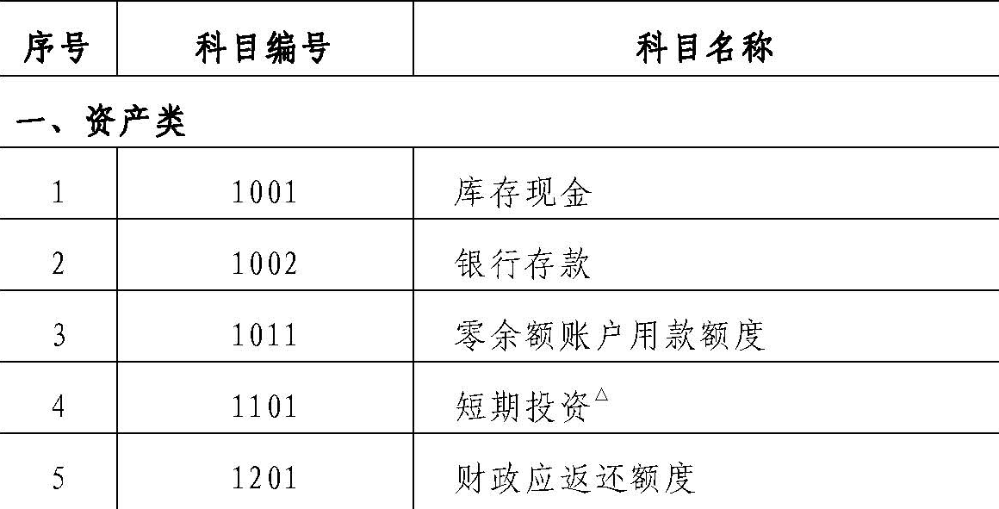
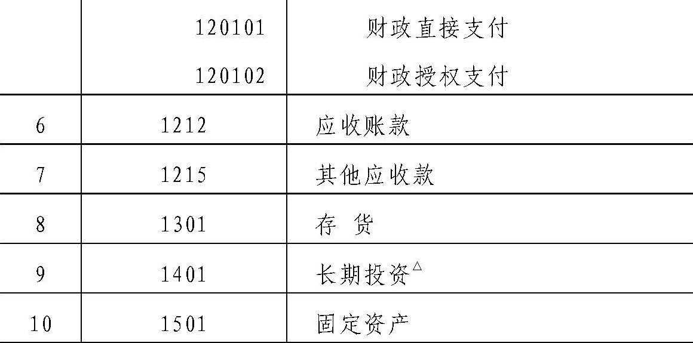
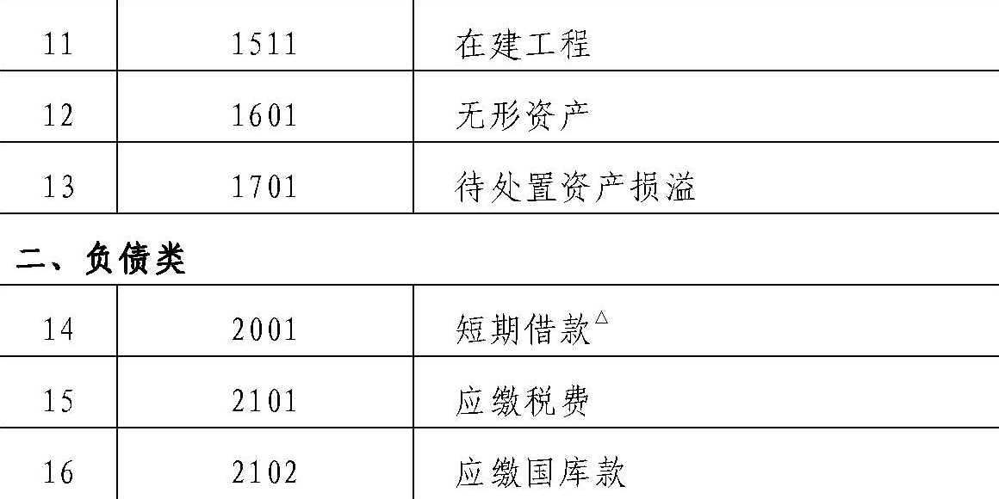
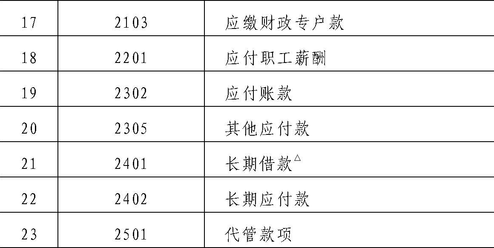
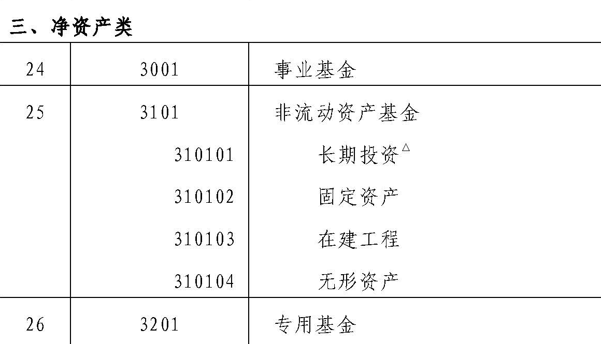
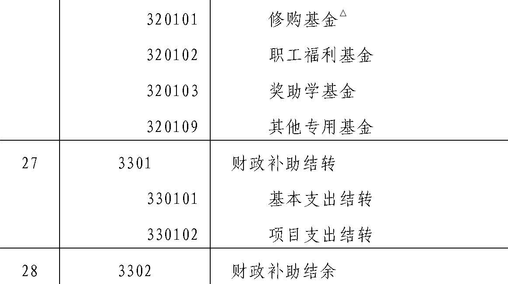
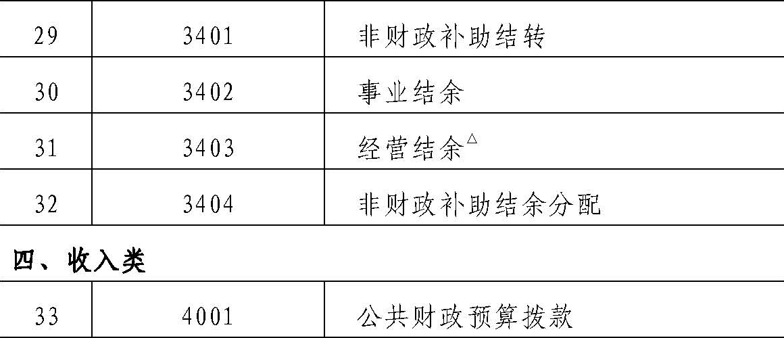
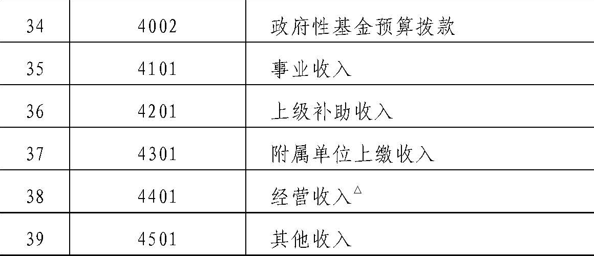
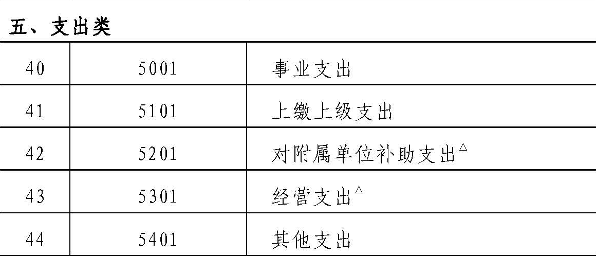
|
说明：
带有“△”上标的会计科目为中小学校非义务教育阶段使用的会计科目，义务教育阶段不得使用。兼有义务教育阶段和非义务教育阶段的中小学校可以设置标有“△”的会计科目，但仅能适用于本校非义务教育阶段的有关业务。 |
第三部分 会计科目使用说明
资产类
1001 库存现金
一、本科目核算中小学校的库存现金。
中小学校拨付给内部有关部门的备用金通过“其他应收款”科目核算。
二、中小学校应当严格按照国家有关现金管理的规定收支现金，并按照本制度规定核算现金的各项收支业务。
三、库存现金的主要账务处理如下：
（一）从银行等金融机构提取现金，按照实际提取的金额，借记本科目，贷记“银行存款”科目；将现金存入银行等金融机构，按照实际存入的金额，借记“银行存款”科目，贷记本科目。
（二）从零余额账户提取现金，按照实际提取的金额，借记本科目，贷记“零余额账户用款额度”科目。
（三）因内部职工出差等原因借出的现金，按照实际借出的金额，借记“其他应收款”科目，贷记本科目；出差人员报销差旅费时，按照实际收回的金额，借记本科目，按照应报销的金额，借记“事业支出”等科目，按照实际借出的金额，贷记“其他应收款”科目。
（四）因开展业务等其他事项收到现金，按照实际收到的金额，借记本科目，贷记有关科目；因购买服务或商品等其他事项支出现金，按照实际支出的金额，借记有关科目，贷记本科目。
四、中小学校应当设置“现金日记账”，由出纳人员根据收付款凭证，按照业务发生顺序逐笔登记。每日终了，应当计算当日的现金收入合计数、现金支出合计数和结余数，并将结余数与实际库存数核对，做到账款相符。
五、中小学校有外币现金的，应当分别按照人民币、各种外币设置“现金日记账”进行明细核算。有关外币现金业务的账务处理参见“银行存款”科目的相关规定。
六、每日账款核对或定期盘点清查中发现现金溢余或短缺的，应当及时查明原因，按规定报经批准后进行账务处理。
（一）如为现金溢余，属于应支付给有关人员或单位的部分，借记本科目，贷记“其他应付款”科目；属于无法查明原因的部分，借记本科目，贷记“其他收入”科目。
（二）如为现金短缺，属于应由责任人赔偿的部分，借记“其他应收款”科目，贷记本科目；属于无法查明原因的部分，报经批准后，借记“其他支出”科目，贷记本科目。
七、本科目期末借方余额，反映中小学校实际持有的库存现金。
1002 银行存款
一、本科目核算中小学校存入银行等金融机构的各种存款。
二、中小学校应当严格按照国家有关支付结算办法的规定办理银行存款收支业务，并按照本制度规定核算银行存款的各项收支业务。
三、银行存款的主要账务处理如下：
（一）存入或收到存款，借记本科目，贷记“库存现金”、“应缴财政专户款”、“事业收入”、“经营收入”等有关科目。
（二）提取或支出存款，借记“库存现金”、“存货”、“事业支出”、“经营支出”等有关科目，贷记本科目。
四、中小学校发生外币业务的，应当按照业务发生当日（或当期期初，下同）的即期汇率，将外币金额折算为人民币记账，并登记外币金额和汇率。
期末，各种外币账户的外币余额应当按照期末的即期汇率折算为人民币金额，作为外币账户期末人民币余额。调整后的各种外币账户人民币余额与原账面人民币余额的差额，作为汇兑损益计入相关支出。
（一）以外币购买物资、劳务等，按照购入当日的即期汇率将支付的外币或应支付的外币折算为人民币金额，借记有关科目，贷记本科目、“应付账款”等科目的外币账户。
（二）以外币收取相关款项等，按照收取款项或收入确认当日的即期汇率将收取的外币或应收取的外币折算为人民币金额，借记本科目、“应收账款”等科目的外币账户，贷记有关科目。
（三）期末，根据各外币账户按期末的即期汇率调整后的人民币余额与原账面人民币余额的差额，作为汇兑损益，借记或贷记本科目、“应收账款”、“应付账款”等科目，贷记或借记“事业支出”、“经营支出”等科目。
五、中小学校应当按开户银行、存款种类及币种等，分别设置“银行存款日记账”，由出纳人员根据收付款凭证，按照业务的发生顺序逐笔登记，每日终了应结出余额。“银行存款日记账”应定期与“银行对账单”核对，至少每月核对一次。月度终了，中小学校银行存款账面余额与银行对账单余额之间如有差额，必须逐笔查明原因并进行处理，按月编制“银行存款余额调节表”，调节相符。
六、本科目期末借方余额，反映中小学校实际存放在银行等金融机构的款项。
1011 零余额账户用款额度
一、本科目核算实行国库集中支付的中小学校根据财政部门批复的用款计划收到和支用的零余额账户用款额度。
二、零余额账户用款额度的主要账务处理如下：
（一）在财政授权支付方式下，收到代理银行盖章的授权支付到账通知书时，根据通知书所列金额，借记本科目，贷记“公共财政预算拨款”、“政府性基金预算拨款”等科目。
（二）按规定支用额度时，借记“存货”、“事业支出”、“其他支出”等有关科目，贷记本科目。
（三）从零余额账户提取现金时，借记“库存现金”科目，贷记本科目。
（四）因购货退回等发生国库授权支付额度退回的，属于以前年度支付的款项，按照退回金额，借记本科目，贷记“财政补助结转”、“财政补助结余”、“存货”等有关科目；属于本年度支付的款项，按照退回金额，借记本科目，贷记“事业支出”、“存货”等有关科目。
（五）向按账户管理规定保留的相应账户划拨工会经费、住房公积金、提租补贴以及经财政部门批准的特殊款项时，借记“银行存款”等科目，贷记本科目。
（六）年度终了，依据代理银行提供的对账单作注销额度的相关账务处理，借记“财政应返还额度——财政授权支付”科目，贷记本科目。中小学校本年度财政授权支付预算指标数大于零余额账户用款额度下达数的，根据未下达的用款额度，借记“财政应返还额度——财政授权支付”科目，贷记“公共财政预算拨款”、“政府性基金预算拨款”等科目。
下年初，中小学校依据代理银行提供的额度恢复到账通知书作恢复额度的相关账务处理，借记本科目，贷记“财政应返还额度——财政授权支付”科目。中小学校收到财政部门批复的上年末未下达零余额账户用款额度时，借记本科目，贷记“财政应返还额度——财政授权支付”科目。
三、本科目期末借方余额，反映中小学校尚未支用的零余额账户用款额度。本科目年末应无余额。
1101 短期投资△
一、本科目核算非义务教育阶段中小学校短期投资的实际成本。短期投资是指非义务教育阶段中小学校依法取得的、持有时间不超过1年（含1年）的投资，主要是国债投资。
二、中小学校应当严格遵守国家法律、行政法规以及财政部门、主管部门关于对外投资的有关规定，义务教育阶段不得对外投资。
三、本科目应当按照国债投资的种类等进行明细核算。
四、短期投资的主要账务处理如下：
（一）短期投资在取得时，应当按照其实际成本（包括购买价款以及税金、手续费等相关税费）作为投资成本，借记本科目，贷记“银行存款”等科目。
（二）短期投资持有期间收到利息时，按实际收到的金额，借记“银行存款”科目，贷记“其他收入——投资收益”科目。
（三）出售短期投资或到期收回短期国债本息，按照实际收到的金额，借记“银行存款”科目，按照出售或收回短期国债的成本，贷记本科目，按其差额，贷记或借记“其他收入——投资收益”科目。
五、本科目期末借方余额，反映中小学校持有的短期投资成本。
1201 财政应返还额度
一、本科目核算实行国库集中支付的中小学校应收财政返还的资金额度。
二、本科目应当设置“财政直接支付”、“财政授权支付”两个明细科目，进行明细核算。
三、财政应返还额度的主要账务处理如下：
（一）财政直接支付
年度终了，中小学校根据本年度财政直接支付预算指标数与当年财政直接支付实际支出数的差额，借记本科目（财政直接支付），贷记“公共财政预算拨款”、“政府性基金预算拨款”等科目。
下年度恢复财政直接支付额度后，中小学校以财政直接支付方式发生实际支出时，借记有关科目，贷记本科目（财政直接支付）。
（二）财政授权支付
年度终了，中小学校依据代理银行提供的对账单作注销额度的相关账务处理，借记本科目（财政授权支付），贷记“零余额账户用款额度”科目。中小学校本年度财政授权支付预算指标数大于零余额账户用款额度下达数的，根据未下达的用款额度，借记本科目（财政授权支付），贷记“公共财政预算拨款”、“政府性基金预算拨款”等科目。
下年初，中小学校依据代理银行提供的额度恢复到账通知书作恢复额度的相关账务处理，借记“零余额账户用款额度”科目，贷记本科目（财政授权支付）。中小学校收到财政部门批复的上年末未下达零余额账户用款额度时，借记“零余额账户用款额度”科目，贷记本科目（财政授权支付）。
四、本科目期末借方余额，反映中小学校应收财政返还的资金额度。
1212 应收账款
一、本科目核算中小学校因开展业务活动对外提供服务等而应收取的款项。
中小学校收到商业汇票（包括银行承兑汇票和商业承兑汇票）或发生预付账款的，也通过本科目核算。
二、本科目应当按照债务人进行明细核算。
三、应收账款的主要账务处理如下：
（一）发生应收账款时，按照应收未收金额，借记本科目，按照确认的收入金额，贷记“经营收入”等科目，按照应缴增值税金额，贷记“应缴税费——应缴增值税”科目。
（二）收回应收账款时，按照实际收到的金额，借记“银行存款”等科目，贷记本科目。
四、逾期三年或以上、有确凿证据表明确实无法收回的应收账款，按规定报经批准后予以核销。核销的应收账款应在“已核销应收账款备查簿”中保留登记。
（一）转入待处置资产时，按照待核销的应收账款金额，借记“待处置资产损溢”科目，贷记本科目。
（二）报经批准予以核销时，借记“其他支出”科目，贷记“待处置资产损溢”科目。
（三）已核销应收账款在以后期间收回的，按照实际收回的金额，借记“银行存款”等科目，贷记“其他收入”科目。
五、本科目期末借方余额，反映中小学校尚未收回的应收账款。
1215 其他应收款
一、本科目核算中小学校除财政应返还额度、应收账款以外的其他各项应收及暂付款项，如职工预借的差旅费、拨付给内部有关部门的备用金、应向职工收取的各种垫付款项等。
二、本科目应当按照其他应收款的类别以及债务人进行明细核算。
三、其他应收款的主要账务处理如下：
（一）发生其他各项应收及暂付款项时，借记本科目，贷记“银行存款”、“库存现金”等科目。
（二）收回其他各项应收及暂付款项时，借记“库存现金”、“银行存款”等科目，贷记本科目。
（三）中小学校内部实行备用金制度的，有关部门使用备用金以后应当及时到财务部门报销并补足备用金。财务部门核定并发放备用金时，借记本科目（备用金），贷记“库存现金”等科目。根据报销数用现金补足备用金定额时，借记有关科目，贷记“库存现金”等科目，报销数和拨补数都不再通过本科目核算。
四、逾期三年或以上、有确凿证据表明确实无法收回的其他应收款，按规定报经批准后予以核销。核销的其他应收款应在“已核销其他应收款备查簿”中保留登记。
（一）转入待处置资产时，按照待核销的其他应收款金额，借记“待处置资产损溢”科目，贷记本科目。
（二）报经批准予以核销时，借记“其他支出”科目，贷记“待处置资产损溢”科目。
（三）已核销其他应收款在以后期间收回的，按照实际收回的金额，借记“银行存款”等科目，贷记“其他收入”科目。
五、本科目期末借方余额，反映中小学校尚未收回的其他应收款。
1301 存货
一、本科目核算中小学校存货的实际成本。
存货是指中小学校在开展教育教学及其他活动中为耗用而储存的资产，包括各类材料、燃料、消耗物资和低值易耗品等。
中小学校随买随用的零星办公用品，可以在购进时直接列作支出，不通过本科目核算。
二、本科目应当按照存货的种类等进行明细核算。
三、存货的主要账务处理如下：
（一）存货在取得时，应当按照其实际成本入账。
1.购入的存货，其成本包括购买价款、相关税费、运输费、装卸费、保险费以及其他使得存货达到目前场所和状态所发生的其他支出。
购入的存货验收入库，按照确定的成本，借记本科目，贷记“银行存款”、“零余额账户用款额度”、“公共财政预算拨款”、“政府性基金预算拨款”、“应付账款”等科目。
2.接受捐赠、无偿调入的存货，其成本按照有关凭据注明的金额加上相关税费、运输费等确定；没有相关凭据的，其成本比照同类或类似存货的市场价格加上相关税费、运输费等确定；没有相关凭据、同类或类似存货的市场价格也无法可靠取得的，该存货按照名义金额（即人民币1元，下同）入账。
接受捐赠、无偿调入的存货验收入库，按照确定的成本，借记本科目，按照发生的相关税费、运输费等，贷记“银行存款”等科目，按照其差额，贷记“其他收入”科目。
按照名义金额入账的情况下，按照名义金额，借记本科目，贷记“其他收入”科目；按照发生的相关税费、运输费等，借记“其他支出”科目，贷记“银行存款”等科目。
（二）存货在发出时，应当根据实际情况采用先进先出法、加权平均法或者个别计价法确定发出存货的实际成本。计价方法一经确定，不得随意变更。低值易耗品的成本于领用时一次摊销。
1.开展教育教学及其他活动领用、发出存货，按照领用、发出存货的实际成本，借记“事业支出”、“经营支出”等科目，贷记本科目。
2.对外捐赠、无偿调出存货，转入待处置资产时，按照存货的账面余额，借记“待处置资产损溢”科目，贷记本科目。
实际捐出、调出存货时，按照“待处置资产损溢”科目的相应余额，借记“其他支出”科目，贷记“待处置资产损溢”科目。
四、中小学校的存货应当定期进行清查盘点，至少每年盘点一次。对于发生的存货盘盈、盘亏或者报废、毁损，应当及时查明原因，按规定报经批准后进行账务处理。
（一）盘盈的存货，按照同类或类似存货的实际成本或市场价格确定入账价值；同类或类似存货的实际成本、市场价格均无法可靠取得的，按照名义金额入账。
盘盈的存货，按照确定的入账价值，借记本科目，贷记“其他收入”科目。
（二）盘亏或者报废、毁损的存货，转入待处置资产时，按照待处置存货的账面余额，借记“待处置资产损溢”科目，贷记本科目。
报经批准予以处置时，按照“待处置资产损溢”科目的相应余额，借记“其他支出”科目，贷记“待处置资产损溢”科目。
处置存货过程中所取得的收入、发生的费用，以及处置收入扣除相关处置费用后的净收入的账务处理，参见“待处置资产损溢”科目。
五、本科目期末借方余额，反映中小学校存货的实际成本。
1401 长期投资△
一、本科目核算非义务教育阶段中小学校长期投资的实际成本。长期投资是指非义务教育阶段中小学校依法取得的、持有时间超过1年（不含1年）的各种股权和债权性质的投资。
二、中小学校应当严格遵守国家法律、行政法规以及财政部门、主管部门关于对外投资的有关规定，义务教育阶段不得对外投资。
三、本科目应当按照长期投资的种类和被投资单位等进行明细核算。
四、长期投资的主要账务处理如下：
（一）长期股权投资
1.长期股权投资在取得时，应当按照其实际成本作为投资成本。（1）以货币资金取得的长期股权投资，按照实际支付的全部价款（包括购买价款以及税金、手续费等相关税费）作为投资成本，借记本科目，贷记“银行存款”等科目；同时，按照投资成本金额，借记“事业基金”科目，贷记“非流动资产基金——长期投资”科目。
（2）以固定资产取得的长期股权投资，按照评估价值加上相关税费作为投资成本，借记本科目，贷记“非流动资产基金——长期投资”科目，按照发生的相关税费，借记“其他支出”科目，贷记“银行存款”、“应缴税费”等科目；同时，按照投出固定资产的账面余额，借记“非流动资产基金——固定资产”科目，贷记“固定资产”科目。
（3）以已入账无形资产取得的长期股权投资，按照评估价值加上相关税费作为投资成本，借记本科目，贷记“非流动资产基金——长期投资”科目，按照发生的相关税费，借记“其他支出”科目，贷记“银行存款”、“应缴税费”等科目；同时，按照投出无形资产的账面余额，借记“非流动资产基金——无形资产”科目，贷记“无形资产”科目。
以未入账无形资产取得的长期股权投资，按照评估价值加上相关税费作为投资成本，借记本科目，贷记“非流动资产基金——长期投资”科目，按照发生的相关税费，借记“其他支出”科目，贷记“银行存款”、“应缴税费”等科目。
2.长期股权投资持有期间，收到利润等投资收益时，按照实际收到的金额，借记“银行存款”等科目，贷记“其他收入——投资收益”科目。
3.转让长期股权投资，转入待处置资产时，按照待转让长期股权投资的账面余额，借记“待处置资产损溢——处置资产价值”科目，贷记本科目。
实际转让时，按照所转让长期股权投资对应的非流动资产基金，借记“非流动资产基金——长期投资”科目，贷记“待处置资产损溢——处置资产价值”科目。
转让长期股权投资过程中取得价款、发生相关税费，以及转让价款扣除相关税费后的净收入的账务处理，参见“待处置资产损溢”科目。
4.因被投资单位破产清算等原因，有确凿证据表明长期股权投资发生损失，按规定报经批准后予以核销。将待核销长期股权投资转入待处置资产时，按照待核销的长期股权投资账面余额，借记“待处置资产损溢”科目，贷记本科目。
报经批准予以核销时，借记“非流动资产基金——长期投资”科目，贷记“待处置资产损溢”科目。
（二）长期债券投资
1.长期债券投资在取得时，应当按照其实际成本作为投资成本。以货币资金购入的长期债券投资，按照实际支付的全部价款（包括购买价款以及税金、手续费等相关税费）作为投资成本，借记本科目，贷记“银行存款”等科目；同时，按照投资成本金额，借记“事业基金”科目，贷记“非流动资产基金——长期投资”科目。
2.长期债券投资持有期间收到利息时，按照实际收到的金额，借记“银行存款”等科目，贷记“其他收入——投资收益”科目。
3.对外转让或到期收回长期债券投资本息，按照实际收到的金额，借记“银行存款”等科目，按照收回长期债券投资的成本，贷记本科目，按照其差额，贷记或借记“其他收入——投资收益”科目；同时，按照收回长期债券投资对应的非流动资产基金，借记“非流动资产基金——长期投资”科目，贷记“事业基金”科目。
五、本科目期末借方余额，反映中小学校持有的长期投资成本。
1501 固定资产
一、本科目核算中小学校固定资产的原价。
固定资产是指中小学校持有的使用期限超过1年（不含1年）、单位价值在规定标准以上，并在使用过程中基本保持原有物质形态的资产。单位价值虽未达到规定标准，但使用期限超过1年（不含1年）的大批同类物资，作为固定资产核算和管理。
二、中小学校的固定资产一般分为六类：房屋及构筑物；专用设备；通用设备；文物和陈列品；图书、档案；家具、用具、装具及动植物。有关说明如下：
（一）中小学校购建的房屋及构建物，不能够分清购建成本中的房屋及构建物部分与土地使用权部分的，应当全部作为固定资产核算；能够分清购建成本中的房屋及构建物部分与土地使用权部分的，应当将其中的房屋及构建物部分作为固定资产核算，将其中的土地使用权作为无形资产核算。
（二）对于应用软件，如果其构成相关硬件不可缺少的组成部分，应当将该软件价值包括在所属硬件价值中，一并作为固定资产进行核算；如果其不构成相关硬件不可缺少的组成部分，应当将该软件作为无形资产核算。
（三）购入需要安装的固定资产，应当先通过“在建工程”科目核算，安装完毕交付使用时再转入本科目核算。
（四）中小学校以经营租赁租入的固定资产，不作为固定资产核算，应当另设备查簿进行登记。
三、中小学校应当根据固定资产定义，结合本单位的具体情况，制定适合于本单位的固定资产目录、具体分类方法，作为进行固定资产核算的依据。
中小学校应当设置“固定资产登记簿”和“固定资产卡片”，按照固定资产类别、项目和使用部门等进行明细核算。出租、出借的固定资产，应当设置备查簿进行登记。
四、有条件的中小学校应当设置固定资产折旧辅助账，登记固定资产原价、当期应计提折旧及累计折旧等情况。
五、固定资产的主要账务处理如下：
（一）固定资产在取得时，应当按照其实际成本入账。1.购入的固定资产，其成本包括购买价款、相关税费以及固定资产交付使用前所发生的可归属于该项资产的运输费、装卸费、安装调试费和专业人员服务费等。
以一笔款项购入多项没有单独标价的固定资产，按照各项固定资产同类或类似资产市场价格的比例对总成本进行分配，分别确定各项固定资产的入账成本。
购入不需安装的固定资产，按照确定的固定资产成本，借记本科目，贷记“非流动资产基金——固定资产”科目；同时，按照实际支付金额，借记“事业支出”、“经营支出”、“专用基金——修购基金”等科目，贷记“公共财政预算拨款”、“政府性基金预算拨款”、“零余额账户用款额度”、“银行存款”等科目。
购入需要安装的固定资产，先通过“在建工程”科目核算。安装完工交付使用时，借记本科目，贷记“非流动资产基金——固定资产”科目；同时，借记“非流动资产基金——在建工程”科目，贷记“在建工程”科目。
2.自行建造的固定资产，其成本包括建造该项资产至交付使用前所发生的全部必要支出。
工程完工交付使用时，按照自行建造过程中发生的实际支出，借记本科目，贷记“非流动资产基金——固定资产”科目；同时，借记“非流动资产基金——在建工程”科目，贷记“在建工程”科目。已交付使用但尚未办理竣工决算手续的固定资产，按照估计价值入账，待确定实际成本后再进行调整。
3.在原有固定资产基础上进行改建、扩建、修缮后的固定资产，其成本按照原固定资产账面余额加上改建、扩建、修缮发生的支出，再扣除固定资产拆除部分的账面余额后的金额确定。
将固定资产转入改建、扩建、修缮时，按照固定资产的账面余额，借记“在建工程”科目，贷记“非流动资产基金——在建工程”科目；同时，借记“非流动资产基金——固定资产”科目，贷记本科目。
工程完工交付使用时，借记本科目，贷记“非流动资产基金——固定资产”科目；同时，借记“非流动资产基金——在建工程”科目，贷记“在建工程”科目。
4.以融资租赁租入的固定资产，其成本按照租赁协议或者合同确定的租赁价款、相关税费以及固定资产交付使用前所发生的可归属于该项资产的运输费、途中保险费、安装调试费等确定。
融资租入的固定资产，按照确定的成本，借记本科目[不需安装]或“在建工程”科目[需安装]，按照租赁协议或者合同确定的租赁价款，贷记“长期应付款”科目，按照其差额，贷记“非流动资产基金——固定资产、在建工程”科目。同时，按照实际支付的相关税费、运输费、途中保险费、安装调试费等，借记“事业支出”、“经营支出”等科目，贷记“银行存款”、“零余额账户用款额度”、“公共财政预算拨款”、“政府性基金预算拨款”等科目。
定期支付租金时，按照支付的租金金额，借记“事业支出”、“经营支出”等科目，贷记“银行存款”、“零余额账户用款额度”、“公共财政预算拨款”、“政府性基金预算拨款”等科目；同时，借记“长期应付款”科目，贷记“非流动资产基金——固定资产”科目。
跨年度分期付款购入固定资产的账务处理，参照融资租入固定资产。
5.接受捐赠、无偿调入的固定资产，其成本按照有关凭据注明的金额加上相关税费、运输费等确定；没有相关凭据的，其成本比照同类或类似固定资产的市场价格加上相关税费、运输费等确定；没有相关凭据、同类或类似固定资产的市场价格也无法可靠取得的，该固定资产按照名义金额入账。
接受捐赠、无偿调入的固定资产，按照确定的固定资产成本，借记本科目[不需安装]或“在建工程”科目[需安装]，贷记“非流动资产基金——固定资产、在建工程”科目；按照发生的相关税费、运输费等，借记“其他支出”科目，贷记“银行存款”等科目。
（二）与固定资产有关的后续支出，应分别以下情况处理：1.为增加固定资产使用效能或延长其使用年限而发生的改建、扩建或修缮等后续支出，应当计入固定资产成本，通过“在建工程”科目核算，完工交付使用时转入本科目。有关账务处理参见“在建工程”科目。
2.为维护固定资产的正常使用而发生的日常修理等后续支出，应当计入当期支出但不计入固定资产成本，借记“事业支出”、“经营支出”等科目，贷记“银行存款”、“零余额账户用款额度”、“公共财政预算拨款”、“政府性基金预算拨款”等科目。
（三）报经批准出售、无偿调出、对外捐赠固定资产或以固定资产对外投资，应当分别以下情况处理：
1.出售、无偿调出、对外捐赠固定资产，转入待处置资产时，按照待处置固定资产的账面余额，借记“待处置资产损溢”科目，贷记本科目。
实际出售、调出、捐出时，按照处置固定资产对应的非流动资产基金，借记“非流动资产基金——固定资产”科目，贷记“待处置资产损溢”科目。
出售固定资产过程中取得价款、发生相关税费，以及出售价款扣除相关税费后的净收入的账务处理，参见“待处置资产损溢”科目。
2.以固定资产对外投资，按照评估价值加上相关税费作为投资成本，借记“长期投资”科目，贷记“非流动资产基金——长期投资”科目，按照发生的相关税费，借记“其他支出”科目，贷记“银行存款”、“应缴税费”等科目；同时，按照投出固定资产的账面余额，借记“非流动资产基金——固定资产”科目，贷记本科目。
六、中小学校的固定资产应当定期进行清查盘点，至少每年盘点一次。对于发生的固定资产盘盈、盘亏或者报废、毁损，应当及时查明原因，按规定报经批准后进行账务处理。
（一）盘盈的固定资产，按照同类或类似固定资产的市场价格确定入账价值；同类或类似固定资产的市场价格无法可靠取得的，按照名义金额入账。
盘盈的固定资产，按照确定的入账价值，借记本科目，贷记“非流动资产基金——固定资产”科目。
（二）盘亏或者报废、毁损的固定资产，转入待处置资产时，按照待处置固定资产的账面余额，借记“待处置资产损溢”科目，贷记本科目。
报经批准予以处置时，按照处置固定资产对应的非流动资产基金，借记“非流动资产基金——固定资产”科目，贷记“待处置资产损溢”科目。
处置报废、毁损固定资产过程中所取得的收入、发生的相关费用，以及处置收入扣除相关费用后的净收入的账务处理，参见“待处置资产损溢”科目。
七、本科目期末借方余额，反映中小学校固定资产的原价。
1511 在建工程
一、本科目核算中小学校在建工程的实际成本。
在建工程是指中小学校已经发生必要支出，但尚未达到交付使用状态的建设工程，包括各种建筑（包括新建、改建、扩建、修缮等）和设备安装工程。
二、本科目应当按照工程性质和具体工程项目等进行明细核算。三、中小学校的基本建设投资应当按照国家有关规定单独建账、单独核算，同时按照本制度的规定至少按月并入本科目及其他相关科目反映。
中小学校应当在本科目下设置“基建工程”明细科目，核算由基建账套并入的在建工程成本。有关基建并账的具体账务处理另行规定。
四、在建工程（非基本建设项目）的主要账务处理如下：
（一）建筑工程
1.将固定资产转入改建、扩建或修缮等时，按照固定资产的账面余额，借记本科目，贷记“非流动资产基金——在建工程”科目；同时，借记“非流动资产基金——固定资产”科目，贷记“固定资产”科目。
2.根据工程价款结算账单与施工企业结算工程价款时，按照实际支付的工程价款，借记本科目，贷记“非流动资产基金——在建工程”科目；同时，借记“事业支出”等科目，贷记“银行存款”、“零余额账户用款额度”、“公共财政预算拨款”、“政府性基金预算拨款”等科目。
3.非义务教育阶段中小学校为建筑工程借入的专门借款的利息，属于建设期间发生的，计入在建工程成本，借记本科目，贷记“非流动资产基金——在建工程”科目；同时，借记“其他支出——利息支出”科目，贷记“银行存款”等科目。
4.工程完工交付使用时，按照建筑工程所发生的实际成本，借记“固定资产”科目，贷记“非流动资产基金——固定资产”科目；同时，借记“非流动资产基金——在建工程”科目，贷记本科目。
（二）设备安装
1.购入需要安装的设备，按照确定的成本，借记本科目，贷记“非流动资产基金——在建工程”科目；同时，按照实际支付金额，借记“事业支出”、“经营支出”等科目，贷记“银行存款”、“零余额账户用款额度”、“公共财政预算拨款”、“政府性基金预算拨款”等科目。
融资租入需要安装的设备，按照确定的成本，借记本科目，按照租赁协议或者合同确定的租赁价款，贷记“长期应付款”科目，按照其差额，贷记“非流动资产基金——在建工程”科目。同时，按照实际支付的相关税费、运输费、途中保险费等，借记“事业支出”、“经营支出”等科目，贷记“银行存款”、“零余额账户用款额度”、“公共财政预算拨款”、“政府性基金预算拨款”等科目。
2.发生安装费用，借记本科目，贷记“非流动资产基金——在建工程”科目；同时，借记“事业支出”、“经营支出”等科目，贷记“银行存款”、“零余额账户用款额度”、“公共财政预算拨款”、“政府性基金预算拨款”等科目。
3.设备安装完工交付使用时，借记“固定资产”科目，贷记“非流动资产基金——固定资产”科目；同时，借记“非流动资产基金——在建工程”科目，贷记本科目。
五、本科目期末借方余额，反映中小学校尚未完工的在建工程发生的实际成本。
1601 无形资产
一、本科目核算中小学校无形资产的原价。
无形资产是指中小学校持有的不具有实物形态的可辨认非货币性资产，包括专利权、商标权、著作权、土地使用权、非专利技术等。
中小学校购入的不构成相关硬件不可缺少组成部分的应用软件，应当作为无形资产核算。
二、本科目应当按照无形资产的类别、项目等进行明细核算。
三、有条件的中小学校应当设置无形资产摊销辅助账，登记无形资产原价、当期应计提摊销及累计摊销等情况。
四、无形资产的主要账务处理如下：
（一）无形资产在取得时，应当按照其实际成本入账。1.外购的无形资产，其成本包括购买价款、相关税费以及可归属于该项资产达到预定用途所发生的其他支出。
购入的无形资产，按照确定的无形资产成本，借记本科目，贷记“非流动资产基金——无形资产”科目；同时，按照实际支付金额，借记“事业支出”等科目，贷记“银行存款”、“零余额账户用款额度”、“公共财政预算拨款”、“政府性基金预算拨款”等科目。
2.委托软件公司开发软件视同外购无形资产进行处理。支付软件开发费时，按照实际支付金额，借记“事业支出”等科目，贷记“银行存款”、“零余额账户用款额度”、“公共财政预算拨款”、“政府性基金预算拨款”等科目。软件开发完成交付使用时，按照软件开发费总额，借记本科目，贷记“非流动资产基金——无形资产”科目。
3.接受捐赠、无偿调入的无形资产，其成本按照有关凭据注明的金额加上相关税费等确定；没有相关凭据的，其成本比照同类或类似无形资产的市场价格加上相关税费等确定；没有相关凭据、同类或类似无形资产的市场价格也无法可靠取得的，该资产按照名义金额入账。
接受捐赠、无偿调入的无形资产，按照确定的无形资产成本，借记本科目，贷记“非流动资产基金——无形资产”科目；按照发生的相关税费等，借记“其他支出”科目，贷记“银行存款”等科目。
（二）与无形资产有关的后续支出，应当分别以下情况处理：1.为增加无形资产的使用效能而发生的后续支出，如对软件进行升级改造或扩展其功能等所发生的支出，应当计入无形资产的成本，借记本科目，贷记“非流动资产基金——无形资产”科目；同时，借记“事业支出”等科目，贷记“银行存款”、“零余额账户用款额度”、“公共财政预算拨款”、“政府性基金预算拨款”等科目。
2.为维护无形资产的正常使用而发生的后续支出，如对软件进行漏洞修补、技术维护等所发生的支出，应当计入当期支出但不计入无形资产成本，借记“事业支出”等科目，贷记“银行存款”、“零余额账户用款额度”、“公共财政预算拨款”、“政府性基金预算拨款”等科目。
（三）报经批准转让、无偿调出、对外捐赠无形资产或以无形资产对外投资，应当分别以下情况处理：
1.转让、无偿调出、对外捐赠无形资产，转入待处置资产时，按照待处置无形资产的账面余额，借记“待处置资产损溢”科目，贷记本科目。
实际转让、调出、捐出时，按照处置无形资产的账面余额，借记“非流动资产基金——无形资产”科目，贷记“待处置资产损溢”科目。
转让无形资产过程中取得价款、发生相关税费，以及出售价款扣除相关税费后的净收入的账务处理，参见“待处置资产损溢”科目。
2.以已入账无形资产对外投资，按照评估价值加上相关税费作为投资成本，借记“长期投资”科目，贷记“非流动资产基金——长期投资”科目，按照发生的相关税费，借记“其他支出”科目，贷记“银行存款”、“应缴税费”等科目；同时，按照投出无形资产的账面余额，借记“非流动资产基金——无形资产”科目，贷记本科目。
（四）无形资产预期不能为中小学校带来服务潜力或经济利益的，应当按规定报经批准后将该无形资产的账面余额予以核销。
转入待处置资产时，按照待核销无形资产的账面余额，借记“待处置资产损溢”科目，贷记本科目。
报经批准予以核销时，按照核销无形资产对应的非流动资产基金，借记“非流动资产基金——无形资产”科目，贷记“待处置资产损溢”科目。
五、本科目期末借方余额，反映中小学校无形资产的原价。
1701 待处置资产损溢
一、本科目核算中小学校待处置资产的价值及处置损溢。中小学校资产处置包括资产的出售、出让、转让、对外捐赠、无偿调出、盘亏、报废、毁损以及货币性资产损失核销等。
二、本科目应当按照待处置资产项目进行明细核算；对于在处置过程中取得相关收入、发生相关费用的处置项目，还应设置“处置资产价值”、“处置净收入”明细科目，进行明细核算。
三、中小学校处置资产一般应当先记入本科目，按规定报经批准后及时进行账务处理。年度终了结账前一般应处理完毕。
四、待处置资产损溢的主要账务处理如下：
（一）按规定报经批准予以核销的应收及预付款项、长期股权投资、无形资产
1.转入待处置资产时，借记本科目，贷记“应收账款”、“其他应收款”、“长期投资”、“无形资产”等科目。
2.报经批准予以核销时，借记“其他支出”科目[应收及预付款项核销]或“非流动资产基金——长期投资、无形资产”科目[长期投资、无形资产核销]，贷记本科目。
（二）盘亏或者毁损、报废的存货、固定资产
1.转入待处置资产时，借记本科目（处置资产价值），贷记“存货”、“固定资产”等科目。
2.报经批准予以处置时，借记“其他支出”科目[处置存货]或“非流动资产基金——固定资产”科目[处置固定资产]，贷记本科目（处置资产价值）。
3.处置毁损、报废存货、固定资产过程中收到残值变价收入、保险理赔和过失人赔偿等，借记“库存现金”、“银行存款”等科目，贷记本科目（处置净收入）。
4.处置毁损、报废存货、固定资产过程中发生相关费用，借记本科目（处置净收入），贷记“库存现金”、“银行存款”等科目。
5.处置完毕，按照处置收入扣除相关处置费用后的净收入，借记本科目（处置净收入），贷记“应缴国库款”等科目。
（三）对外捐赠、无偿调出存货、固定资产、无形资产
1.转入待处置资产时，借记本科目，贷记“存货”、“固定资产”、“无形资产”等科目。
2.实际捐出、调出时，借记“其他支出”科目[捐出、调出存货]或“非流动资产基金——固定资产、无形资产”科目[捐出、调出固定资产、无形资产]，贷记本科目。
（四）转让（出售）长期股权投资、固定资产、无形资产
1.转入待处置资产时，借记本科目（处置资产价值），贷记“长期投资”、“固定资产”、“无形资产”等科目。
2.实际转让时，借记“非流动资产基金——长期投资、固定资产、无形资产”科目，贷记本科目（处置资产价值）。
3.转让过程中取得价款、发生相关税费，以及转让价款扣除相关税费后的净收入的账务处理，按照国家有关规定，比照本科目“四（二）”有关毁损、报废存货、固定资产进行处理。
五、本科目期末如为借方余额，反映尚未处置完毕的各种资产价值及净损失；期末如为贷方余额，反映尚未处置完毕的各种资产净溢余。年度终了报经批准处理后，本科目一般应无余额。
负债类
2001 短期借款△
一、本科目核算非义务教育阶段中小学校经批准从银行等金融机构借入的期限在1年内（含1年)的各种借款本金。
严禁义务教育阶段中小学校举借债务。
二、本科目应当按照贷款单位和贷款种类进行明细核算。
三、短期借款的主要账务处理如下：
（一）借入各种短期借款时，按照实际借入的金额，借记“银行存款”科目，贷记本科目。
（二）支付短期借款利息时，借记“其他支出”科目，贷记“银
行存款”科目。
（三）归还短期借款本金时，借记本科目，贷记“银行存款”科目。
四、本科目期末贷方余额，反映非义务教育阶段中小学校尚未归还的短期借款本金。
2101 应缴税费
一、本科目核算中小学校按照税法等规定计算应缴纳的各种税费，包括营业税、增值税、城市维护建设税、教育费附加、房产税、城镇土地使用税、车船税、企业所得税等。
中小学校代扣代缴的个人所得税，通过本科目核算。中小学校应缴纳的印花税不需要预提应缴税费，直接通过支出等有关科目核算，不在本科目核算。
二、本科目应当按照应缴纳的税费种类进行明细核算。
三、应缴税费的主要账务处理如下：
（一）发生营业税、城市维护建设税、教育费附加纳税义务的，按税法规定计算的应缴税费金额，借记“待处置资产损溢——处置净收入”科目[出售不动产应缴的税费]或有关支出科目，贷记本科目。实际缴纳时，借记本科目，贷记“银行存款”科目。
（二）属于增值税小规模纳税人的中小学校销售应税产品或提供应税服务，按照实际收到或应收的价款，借记“银行存款”、“应收账款”等科目，按照实际收到或应收价款扣除增值税额后的金额，贷记“经营收入”等科目，按照应缴增值税金额，贷记本科目（应缴增值税）。实际缴纳增值税时，借记本科目（应缴增值税），贷记“银行存款”科目。
（三）发生房产税、城镇土地使用税、车船税纳税义务的，按税法规定计算的应缴税金数额，借记有关科目，贷记本科目。实际缴纳时，借记本科目，贷记“银行存款”科目。
（四）代扣代缴个人所得税的，按税法规定计算应代扣代缴的个人所得税金额，借记“应付职工薪酬”科目，贷记本科目。实际缴纳时，借记本科目，贷记“银行存款”科目。
（五）发生企业所得税纳税义务的，按税法规定计算的应缴税金数额，借记“非财政补助结余分配”科目，贷记本科目。实际缴纳时，借记本科目，贷记“银行存款”科目。
（六）发生其他纳税义务的，按照应缴纳的税费金额，借记有关科目，贷记本科目。实际缴纳时，借记本科目，贷记“银行存款”等科目。
四、本科目期末借方余额，反映中小学校多缴纳的税费金额；本科目期末贷方余额，反映中小学校应缴未缴的税费金额。
2102 应缴国库款
一、本科目核算中小学校按规定应缴入国库的款项（应缴税费除外）。
二、本科目应当按照应缴国库的各款项类别进行明细核算。
三、应缴国库款的主要账务处理如下：
（一）按规定计算确定或实际取得应缴国库的款项时，借记有关科目，贷记本科目。
（二）中小学校处置资产取得的应上缴国库的处置净收入的账务处理，参见“待处置资产损溢”科目。
（三）上缴款项时，借记本科目，贷记“银行存款”等科目。
四、本科目期末贷方余额，反映中小学校应缴入国库但尚未缴纳的款项。
2103 应缴财政专户款
一、本科目核算中小学校按规定应缴入财政专户的款项。
二、本科目应当按照应缴财政专户的各款项类别进行明细核算。
三、应缴财政专户款的主要账务处理如下：
（一）取得应缴财政专户的款项时，借记有关科目，贷记本科目。
（二）上缴款项时，借记本科目，贷记“银行存款”等科目。四、本科目期末贷方余额，反映中小学校应缴入财政专户但尚未缴纳的款项。
2201 应付职工薪酬
一、本科目核算中小学校按有关规定应付给职工及为职工支付的各种薪酬。包括基本工资、绩效工资、国家统一规定的津贴补贴、社会保险费、住房公积金等。
二、本科目应当根据国家有关规定按照“工资（离退休费）”、“地方（部门）津贴补贴”、“其他个人收入”以及“社会保险费”、“住房公积金”等进行明细核算。
三、应付职工薪酬的主要账务处理如下：
（一）计算当期应付职工薪酬，借记“事业支出”、“经营支出”等科目，贷记本科目。
（二）向职工支付工资、津贴补贴等薪酬，借记本科目，贷记“银行存款”、“零余额账户用款额度”、“公共财政预算拨款”、“政府性基金预算拨款”等科目。
（三）按税法规定代扣代缴个人所得税，借记本科目，贷记“应缴税费——应缴个人所得税”科目。
（四）按照国家有关规定缴纳职工社会保险费和住房公积金，借记本科目，贷记“银行存款”、“零余额账户用款额度”、“公共财政预算拨款”、“政府性基金预算拨款”等科目。
（五）从应付职工薪酬中支付其他款项，借记本科目，贷记“银行存款”、“零余额账户用款额度”、“公共财政预算拨款”、“政府性基金预算拨款”等科目。
四、本科目期末贷方余额，反映中小学校应付未付的职工薪酬。
2302 应付账款
一、本科目核算中小学校因购买材料、物资等而应付的款项。中小学校开出、承兑商业汇票（包括银行承兑汇票和商业承兑汇票）或发生预收账款的，也通过本科目核算。
二、本科目应当按照债权单位（或个人）进行明细核算。
三、应付账款的主要账务处理如下：
（一）购入材料、物资等已验收入库但货款尚未支付的，按照应付未付金额，借记“存货”等科目，贷记本科目。
（二）偿付应付账款时，按照实际支付的金额，借记本科目，贷记“银行存款”等科目。
（三）无法偿付或债权人豁免偿还的应付账款，借记本科目，贷记“其他收入”科目。
四、本科目期末贷方余额，反映中小学校尚未支付的应付账款。
2305 其他应付款
一、本科目核算中小学校除应缴税费、应缴国库款、应缴财政专户款、应付职工薪酬、应付账款之外的其他各项偿还期限在1年内（含1年）的应付及暂收款项。
中小学校的代管款项在“代管款项”科目核算，不在本科目核算。
二、本科目应当按照其他应付款的类别以及债权单位（或个人）进行明细核算。
三、其他应付款的主要账务处理如下：
（一）发生其他各项应付及暂收款项时，借记“银行存款”等科目，贷记本科目。
（二）支付其他应付款项时，借记本科目，贷记“银行存款”等科目。
（三）无法偿付或债权人豁免偿还的其他应付款项，借记本科目，贷记“其他收入”科目。
四、本科目期末贷方余额，反映中小学校尚未归还的长期借款本金。
2402 长期应付款
一、本科目核算中小学校发生的偿还期限超过1年（不含1年）的应付款项，如以融资租赁租入固定资产的租赁费、跨年度分期付款购入固定资产的价款等。
二、本科目应当按照长期应付款的类别以及债权单位（或个人）进行明细核算。
三、长期应付款的主要账务处理如下：
（一）发生长期应付款时，借记“固定资产”、“在建工程”等科目，贷记本科目、“非流动资产基金”等科目。
（二）支付长期应付款时，借记“事业支出”、“经营支出”等科目，贷记“银行存款”等科目；同时，借记本科目，贷记“非流动资产基金”科目。
（三）无法偿付或债权人豁免偿还的长期应付款，借记本科目，贷记“其他收入”科目。
四、本科目期末贷方余额，反映中小学校尚未支付的长期应付款。
2501 代管款项
一、本科目核算中小学校接受委托代为管理的各类款项，包括为提供服务的单位代收交付的教科书费、作业本费、食堂伙食费等代收费，以及党费、团费等代管经费。
二、本科目应当按照教科书费、作业本费、食堂伙食费以及党费、团费等代管款项类别进行明细核算。
三、代管款项的主要账务处理如下：
（一）代收各类代管款项，按照实际收到的金额，借记“库存现金”、“银行存款”等科目，贷记本科目。
（二）支付或退回代管款项，按照实际支付的金额，借记本科目，贷记“库存现金”、“银行存款”等科目。
四、本科目期末贷方余额，反映中小学校各类代管款项尚未支付的余额。
净资产类
3001 事业基金
一、本科目核算中小学校拥有的非限定用途的净资产，主要为非财政补助结余扣除结余分配后滚存的金额。
二、事业基金的主要账务处理如下：
（一）年末，将“非财政补助结余分配”科目余额结转至本科目，借记或贷记“非财政补助结余分配”科目，贷记或借记本科目。
（二）年末，将留归本单位使用的非财政补助专项（项目已完成）剩余资金结转至本科目，借记“非财政补助结转——XX项目”科目，贷记本科目。
（三）以货币资金取得长期股权投资、长期债券投资，按照实际支付的全部价款（包括购买价款以及税金、手续费等相关税费）作为投资成本，借记“长期投资”科目，贷记“银行存款”等科目；同时，按照投资成本金额，借记本科目，贷记“非流动资产基金——长期投资”科目。
（四）对外转让或到期收回长期债券投资本息，按照实际收到的金额，借记“银行存款”等科目，按照收回长期债券投资的成本，贷记“长期投资”科目，按照其差额，贷记或借记“其他收入——投资收益”科目；同时，按照收回长期债券投资对应的非流动资产基金，借记“非流动资产基金——长期投资”科目，贷记本科目。
三、中小学校发生需要调整以前年度非财政补助结余的事项，通过本科目核算。国家另有规定的，从其规定。
四、本科目期末贷方余额，反映中小学校历年积存的非限定用途净资产的金额。
3101 非流动资产基金
一、本科目核算中小学校长期投资、固定资产、在建工程、无形资产等非流动资产占用的金额。
二、本科目应当设置“长期投资△”、“固定资产”、“在建工程”、“无形资产”等明细科目，进行明细核算。
三、非流动资产基金的主要账务处理如下：
（一）非流动资产基金应当在取得长期投资、固定资产、在建工程、无形资产等非流动资产或发生相关支出时予以确认。
取得相关资产或发生相关支出时，借记“长期投资”、“固定资产”、“在建工程”、“无形资产”等科目，贷记本科目等有关科目；同时或待以后发生相关支出时，借记“事业支出”等有关科目，贷记“银行存款”、“零余额账户用款额度”、“公共财政预算拨款”、“政府性基金预算拨款”等科目。
（二）处置长期股权投资、固定资产、无形资产，以及以固定资产、无形资产对外投资时，应当冲销该资产对应的非流动资产基金。
1.以固定资产、无形资产对外投资，按照评估价值加上相关税费作为投资成本，借记“长期投资”科目，贷记本科目（长期投资），按照发生的相关税费，借记“其他支出”科目，贷记“银行存款”等科目；同时，按照投出固定资产、无形资产的账面余额，借记本科目（固定资产、无形资产），贷记“固定资产”、“无形资产”科目。
2.出售或以其他方式处置长期股权投资、固定资产、无形资产，转入待处置资产时，借记“待处置资产损溢”科目，贷记“长期投资”、“固定资产”、“无形资产”等科目。
实际处置时，借记本科目（长期投资、固定资产、无形资产），贷记“待处置资产损溢”科目。
四、本科目期末贷方余额，反映中小学校非流动资产占用的金额。
3201 专用基金
一、本科目核算中小学校按规定提取或者设置的具有专门用途的净资产。
二、本科目应当设置“修购基金△”、“职工福利基金”、“奖助学基金”、“其他专用基金”等明细科目，进行明细核算。
（一）修购基金△
，即非义务教育阶段中小学校按照事业收入和经营收入的一定比例提取，并按照规定在相应的购置和修缮科目中列支，以及按照其他规定转入，用于本校固定资产维修和购置的资金。义务教育阶段中小学校不提取修购基金。
（二）职工福利基金，即中小学校按照非财政拨款（补助）结余的一定比例提取以及按照其他规定提取转入，用于职工集体福利设施、集体福利待遇等的资金。
（三）奖助学基金，即中小学校接受社会捐赠和按照规定从事业收入中提取转入，用于奖励、资助学生的资金。
（四）其他专用基金，即中小学校按照其他有关规定，根据事业发展需要提取或者设置的专用资金。
三、专用基金的主要账务处理如下：
（一）提取和使用修购基金△
非义务教育阶段中小学校按规定提取修购基金的，按照提取的金额，借记“事业支出”、“经营支出”科目，贷记本科目（修购基金）。
按规定使用修购基金时，借记本科目（修购基金），贷记“银行存款”等科目；使用修购基金形成固定资产的，还应借记“固定资产”科目，贷记“非流动资产基金——固定资产”科目。
（二）提取和使用职工福利基金
按照有关规定提取职工福利费的，按照提取的金额，借记有关科目，贷记本科目（职工福利基金）。
年末，按规定从本年度非财政补助结余中提取职工福利基金的，按照提取的金额，借记“非财政补助结余分配”科目，贷记本科目（职工福利基金）。
按规定使用职工福利基金时，借记本科目（职工福利基金），贷记“银行存款”等科目；使用职工福利基金形成固定资产的，还应借记“固定资产”科目，贷记“非流动资产基金——固定资产”科目。
（三）接受或提取奖助学基金
1.接受和使用专门用于奖助学的社会捐赠
收到专门用于奖助学的社会捐赠时，按照实际收到的金额，借记“银行存款”等科目，贷记“其他收入——捐赠收入”科目。
使用此类捐赠时，按照实际支付的金额，借记“事业支出”等科目，贷记“库存现金”、“银行存款”等科目。
期末，按照当期实际收到的此类捐赠金额，借记“其他收入——捐赠收入”科目，贷记“非财政补助结转”科目；按照当期实际支付的此类捐赠金额，借记“非财政补助结转”科目，贷记“事业支出”等科目。
年末，按照当年尚未使用的此类捐赠余额，借记“非财政补助结转”科目，贷记本科目（奖助学基金）。
2.提取和使用奖助学基金
按规定提取奖助学基金的，按照提取的金额，借记“事业支出”等科目，贷记本科目（奖助学基金）。
按规定使用此类奖助学基金时，借记本科目（奖助学基金），贷记“银行存款”等科目。
（四）提取和使用其他专用基金
如有按规定提取的其他专用基金，按照提取的金额，借记有关支出科目或“非财政补助结余分配”等科目，贷记本科目。
按规定使用其他专用基金时，借记本科目，贷记“银行存款”等科目；使用专用基金形成固定资产的，还应借记“固定资产”科目，贷记“非流动资产基金——固定资产”科目。
四、本科目期末贷方余额，反映中小学校专用基金余额。
3301 财政补助结转
一、本科目核算中小学校滚存的财政补助结转资金，包括基本支出结转和项目支出结转。
二、本科目应当设置“基本支出结转”、“项目支出结转”两个明细科目，并在“基本支出结转”明细科目下按照“人员经费”、“日常公用经费”进行明细核算，在“项目支出结转”明细科目下按照具体项目进行明细核算；本科目还应按照《政府收支分类科目》中“支出功能分类科目”的相关科目进行明细核算。
三、财政补助结转的主要账务处理如下：
（一）期末，将财政补助收入（包括公共财政预算拨款和政府性基金预算拨款，下同）本期发生额结转至本科目，借记“公共财政预算拨款——基本支出、项目支出”、“政府性基金预算拨款——基本支出、项目支出”科目，贷记本科目（基本支出结转、项目支出结转）；将事业支出（财政补助支出）本期发生额结转至本科目，借记本科目（基本支出结转、项目支出结转），贷记“事业支出——财政补助支出（基本支出、项目支出）”科目。
（二）年末，完成上述（一）结转后，应当对财政补助各明细项目执行情况进行分析，按照有关规定将符合财政补助结余性质的项目余额结转至“财政补助结余”科目，借记或贷记本科目（项目支出结转——XX项目），贷记或借记“财政补助结余”科目。
（三）按规定上缴财政补助结转资金或注销财政补助结转额度的，按照实际上缴金额或注销的额度金额，借记本科目，贷记“银行存款”、“零余额账户用款额度”、“财政应返还额度”等科目。取得主管部门归集调入财政补助结转资金或额度的，做相反会计分录。
四、中小学校发生需要调整以前年度财政补助结转的事项，通过本科目核算。
五、本科目期末贷方余额，反映中小学校财政补助结转资金数额。
3302 财政补助结余
一、本科目核算中小学校滚存的财政补助项目支出结余资金。
二、本科目应当按照《政府收支分类科目》中“支出功能分类科目”的相关科目进行明细核算。
三、财政补助结余的主要账务处理如下：
（一）年末，对财政补助各明细项目执行情况进行分析，按照有关规定将符合财政补助结余性质的项目余额结转至“财政补助结余”科目，借记或贷记“财政补助结转——项目支出结转（XX项目）”科目，贷记或借记本科目。
（二）按规定上缴财政补助结余资金或注销财政补助结余额度的，按照实际上缴金额或注销的额度金额，借记本科目，贷记“银行存款”、“零余额账户用款额度”、“财政应返还额度”等科目。取得主管部门归集调入财政补助结余资金或额度的，做相反会计分录。
四、中小学校发生需要调整以前年度财政补助结余的事项，通过本科目核算。
五、本科目期末贷方余额，反映中小学校财政补助结余资金数额。
3401 非财政补助结转
一、本科目核算中小学校除财政补助收支以外的各专项资金收入与其相关支出相抵后剩余滚存的、须按规定用途使用的结转资金。
二、本科目应当按照非财政专项资金的具体项目进行明细核算。
三、非财政补助结转的主要账务处理如下：
（一）期末，将事业收入、上级补助收入、附属单位上缴收入、其他收入本期发生额中的专项资金收入结转至本科目，借记“事业收入”、“上级补助收入”、“附属单位上缴收入”、“其他收入”科目下各专项资金收入明细科目，贷记本科目；将事业支出、其他支出本期发生额中的非财政专项资金支出结转至本科目，借记本科目，贷记“事业支出——非财政专项资金支出”、“其他支出”科目下各专项资金支出明细科目。
（二）年末，完成上述（一）结转后，应当对非财政补助专项结转资金各项目情况进行分析：
1.尚未使用的专门用于奖助学的社会捐赠余额，借记本科目，贷记“专用基金——奖助学基金”科目。
2.将已完成项目的项目剩余资金区分以下情况处理：缴回原专项资金拨入单位的，借记本科目（XX项目），贷记“银行存款”等科目；留归本单位使用的，借记本科目（XX项目），贷记“事业基金”科目。
四、中小学校食堂实行单独核算。年末，将食堂收支净额结转至本科目，借记“其他收入——食堂净收入”科目，贷记本科目（食堂资金结转）。
五、中小学校发生需要调整以前年度非财政补助结转的事项，通过本科目核算。
六、本科目期末贷方余额，反映中小学校非财政补助专项结转资金数额。
3402 事业结余
一、本科目核算中小学校一定期间除财政补助收支、非财政专项资金收支和经营收支以外各项收支相抵后的余额。
二、事业结余的主要账务处理如下：
（一）期末，将事业收入、上级补助收入、附属单位上缴收入、其他收入本期发生额中的非专项资金收入结转至本科目，借记“事业收入”、“上级补助收入”、“附属单位上缴收入”、“其他收入”科目下各非专项资金收入明细科目，贷记本科目；将事业支出、其他支出本期发生额中的非财政、非专项资金支出（其他资金支出），以及上缴上级支出、对附属单位补助支出的本期发生额结转至本科目，借记本科目，贷记“事业支出——其他资金支出”、“其他支出”科目下各非专项资金支出明细科目、“上缴上级支出”、“对附属单位补助支出”科目。
（二）年末，完成上述（一）结转后，将本科目余额结转至“非财政补助结余分配”科目，借记或贷记本科目，贷记或借记“非财政补助结余分配”科目。
三、本科目期末如为贷方余额，反映中小学校自年初至报告期末累计实现的事业结余；如为借方余额，反映中小学校自年初至报告期末累计发生的事业亏损。年末结账后，本科目应无余额。
3403 经营结余△
一、本科目核算非义务教育阶段中小学校一定期间各项经营收支相抵后余额弥补以前年度经营亏损后的余额。
二、经营结余的主要账务处理如下：
（一）期末，将经营收入本期发生额结转至本科目，借记“经营收入”科目，贷记本科目；将经营支出本期发生额结转至本科目，借记本科目，贷记“经营支出”科目。
（二）年末，完成上述（一）结转后，如本科目为贷方余额，将本科目余额结转至“非财政补助结余分配”科目，借记本科目，贷记“非财政补助结余分配”科目；如本科目为借方余额，为经营亏损，不予结转。
三、本科目期末如为贷方余额，反映非义务教育阶段中小学校自年初至报告期末累计实现的经营结余弥补以前年度经营亏损后的经营结余；如为借方余额，反映非义务教育阶段中小学校截至报告期末累计发生的经营亏损。
年末结账后，本科目一般无余额；如为借方余额，反映非义务教育阶段中小学校累计发生的经营亏损。
3404 非财政补助结余分配
一、本科目核算中小学校本年度非财政补助结余分配的情况和结果。
二、非财政补助结余分配的主要账务处理如下：
（一）年末，将“事业结余”科目余额结转至本科目，借记或贷记“事业结余”科目，贷记或借记本科目；将“经营结余”科目贷方余额结转至本科目，借记“经营结余”科目，贷记本科目。
（二）有企业所得税缴纳义务的中小学校计算出应缴纳的企业所得税，借记本科目，贷记“应缴税费——应缴企业所得税”科目。
（三）按照有关规定提取职工福利基金的，按照提取的金额，借记本科目，贷记“专用基金——职工福利基金”科目。
（四）年末，按规定完成上述（一）至（三）处理后，将本科目余额结转至“事业基金”科目，借记或贷记本科目，贷记或借记“事业基金”科目。
三、年末结账后，本科目应无余额。
收入类
4001 公共财政预算拨款
一、本科目核算中小学校从同级财政部门取得的、用公共财政预算安排的各类财政拨款。
二、本科目应当设置“基本支出”和“项目支出”两个明细科目；两个明细科目下按照《政府收支分类科目》中“支出功能分类”的相关科目进行明细核算；同时在“基本支出”明细科目下按照“人员经费”和“日常公用经费”进行明细核算，在“项目支出”明细科目下按照具体项目进行明细核算。同时，可以按照教育事业费拨款、教育费附加拨款、其他经费拨款等进行明细核算。
三、公共财政预算拨款的主要账务处理如下：
（一）财政直接支付方式下，对财政直接支付的支出，中小学校根据财政国库支付执行机构委托代理银行转来的财政直接支付入账通知书及原始凭证，按照通知书中的直接支付入账金额，借记有关科目，贷记本科目。
年度终了，根据本年度财政直接支付预算指标数与当年财政直接支付实际支出数的差额，借记“财政应返还额度——财政直接支付”科目，贷记本科目。
（二）财政授权支付方式下，中小学校根据代理银行转来的授权支付到账通知书，按照通知书中的授权支付额度，借记“零余额账户用款额度”科目，贷记本科目。
年度终了，中小学校本年度财政授权支付预算指标数大于零余额账户用款额度下达数的，根据未下达的用款额度，借记“财政应返还额度——财政授权支付”科目，贷记本科目。
（三）其他方式下，实际收到财政补助收入时，按照实际收到的金额，借记“银行存款”等科目，贷记本科目。
（四）因购货退回等发生国库直接支付款项退回的，属于以前年度支付的款项，按照退回金额，借记“财政应返还额度”科目，贷记“财政补助结转”、“财政补助结余”、“存货”等有关科目；属于本年度支付的款项，按照退回金额，借记本科目，贷记“事业支出”、“存货”等有关科目。
（五）期末，将本科目本期发生额结转至“财政补助结转”科目，借记本科目，贷记“财政补助结转”科目。
四、期末结账后，本科目应无余额。
4002 政府性基金预算拨款
一、本科目核算中小学校从同级财政部门取得的、用政府性基金预算安排的各类财政拨款。
二、本科目应当设置“基本支出”和“项目支出”两个明细科目；两个明细科目下按照《政府收支分类科目》中“支出功能分类”的相关科目进行明细核算；同时在“基本支出”明细科目下按照“人员经费”和“日常公用经费”进行明细核算，在“项目支出”明细科目下按照具体项目进行明细核算。同时，可以按照地方教育附加拨款、国有土地出让收入拨款、国有资源使用收入拨款、彩票公益金拨款等进行明细核算。
三、政府性基金预算拨款的主要账务处理如下：
（一）财政直接支付方式下，对财政直接支付的支出，中小学校根据财政国库支付执行机构委托代理银行转来的财政直接支付入账通知书及原始凭证，按照通知书中的直接支付入账金额，借记有关科目，贷记本科目。
年度终了，根据本年度财政直接支付预算指标数与当年财政直接支付实际支出数的差额，借记“财政应返还额度——财政直接支付”科目，贷记本科目。
（二）财政授权支付方式下，中小学校根据代理银行转来的授权支付到账通知书，按照通知书中的授权支付额度，借记“零余额账户用款额度”科目，贷记本科目。年度终了，中小学校本年度财政授权支付预算指标数大于零余额账户用款额度下达数的，根据未下达的用款额度，借记“财政应返还额度——财政授权支付”科目，贷记本科目。
（三）其他方式下，实际收到地方基金拨款时，按照实际收到的金额，借记“银行存款”等科目，贷记本科目。
（四）因购货退回等发生国库直接支付款项退回的，属于以前年度支付的款项，按照退回金额，借记“财政应返还额度”科目，贷记“财政补助结转”、“财政补助结余”、“存货”等有关科目；属于本年度支付的款项，按照退回金额，借记本科目，贷记“事业支出”、“存货”等有关科目。
（五）期末，将本科目本期发生额结转至“财政补助结转”科目，借记本科目，贷记“财政补助结转”科目。
四、期末结账后，本科目应无余额。
4101 事业收入
一、本科目核算中小学校开展教育教学及其辅助活动依法取得的收入，主要包括行政事业性收费（如纳入行政事业性收费的学费、住宿费、考试报名费、考试考务费等）、科研收入，以及与教育教学活动直接相关的对外服务性收费（如未纳入行政事业性收费的非学历培训费等）等。
二、本科目应当按照事业收入的类别、项目等进行明细核算。事业收入中如有专项资金收入，还应当按照具体项目进行明细核算。
三、事业收入的主要账务处理如下：
（一）采用财政专户返还方式管理的事业收入
1.收到应上缴财政专户的事业收入时，按照实际收到的金额，借记“银行存款”、“库存现金”等科目，贷记“应缴财政专户款”科目。
2.向财政专户上缴款项时，按照实际上缴的金额，借记“应缴财政专户款”科目，贷记“银行存款”等科目。
3.收到从财政专户返还的事业收入时，按照实际收到的返还金额，借记“银行存款”等科目，贷记本科目。
（二）未采用财政专户返还方式管理的事业收入收到事业收入时，按照实际收到的金额，借记“银行存款”、“库存现金”等科目，贷记本科目。
（三）期末，将本科目本期发生额中的专项资金收入结转至“非财政补助结转”科目，借记本科目下各专项资金收入明细科目，贷记“非财政补助结转”科目；将本科目本期发生额中的非专项资金收入结转至“事业结余”科目，借记本科目下各非专项资金收入明细科目，贷记“事业结余”科目。
四、期末结账后，本科目应无余额。
4201 上级补助收入
一、本科目核算中小学校从主管部门和上级单位取得的非财政补助收入。
二、本科目应当按照发放补助单位、补助项目等进行明细核算。上级补助收入中如有专项资金收入，还应当按照具体项目进行明细核算。
三、上级补助收入的主要账务处理如下：
（一）收到上级补助收入时，按照实际收到的金额，借记“银行存款”等科目，贷记本科目。
（二）期末，将本科目本期发生额中的专项资金收入结转至“非财政补助结转”科目，借记本科目下各专项资金收入明细科目，贷记“非财政补助结转”科目；将本科目本期发生额中的非专项资金收入结转至“事业结余”科目，借记本科目下各非专项资金收入明细科目，贷记“事业结余”科目。
四、期末结账后，本科目应无余额。
4501 其他收入
一、本科目核算中小学校除财政补助收入、事业收入、上级补助收入、附属单位上缴收入、经营收入以外的各项收入，包括投资收益、银行存款利息收入、租金收入、捐赠收入、现金盘盈收入、存货盘盈收入、收回已核销应收及预付款项、无法偿付的应付及预收款项，以及食堂净收入等。
二、本科目应当按照其他收入的类别等进行明细核算。其他收入中如有专项资金收入（如限定用途的捐赠收入），还应当按照具体项目进行明细核算。
三、其他收入的主要账务处理如下：
（一）投资收益△
1.对外投资持有期间收到利息、利润等时，按实际收到的金额，借记“银行存款”等科目，贷记本科目（投资收益）。
2．出售或到期收回国债投资本息，按照实际收到的金额，借记“银行存款”等科目，按照出售或收回国债投资的成本，贷记“短期投资”、“长期投资”科目，按其差额，贷记或借记本科目（投资收益）。
（二）银行存款利息收入、租金收入收到银行存款利息、资产承租人支付的租金，按照实际收到的金额，借记“银行存款”等科目，贷记本科目。
（三）捐赠收入
1.接受捐赠现金资产，按照实际收到的金额，借记“银行存款”等科目，贷记本科目。
2.接受捐赠的存货验收入库，按照确定的成本，借记“存货”科目，按照发生的相关税费、运输费等，贷记“银行存款”等科目，按照其差额，贷记本科目。接受捐赠固定资产、无形资产等非流动资产，不通过本科目核算。
（四）现金盘盈收入
每日现金账款核对中如发现现金溢余，属于无法查明原因的部分，借记“库存现金”科目，贷记本科目。
（五）存货盘盈收入
盘盈的存货，按照确定的入账价值，借记“存货”科目，贷记本科目。
（六）收回已核销应收及预付款项
已核销应收账款、预付账款、其他应收款在以后期间收回的，按照实际收回的金额，借记“银行存款”等科目，贷记本科目。
（七）无法偿付的应付及预收款项
无法偿付或债权人豁免偿还的应付账款、预收账款、其他应付款及长期应付款，借记“应付账款”、“其他应付款”、“长期应付款”等科目，贷记本科目。
（八）期末，将本科目本期发生额中的专项资金收入结转至“非财政补助结转”科目，借记本科目下各专项资金收入明细科目，贷记“非财政补助结转”科目；将本科目本期发生额中的非专项资金收入结转至“事业结余”科目，借记本科目下各非专项资金收入明细科目，贷记“事业结余”科目。
四、中小学校食堂实行单独核算。年末，抵销中小学校与本校食堂内部往来后，将食堂收支净额并入本科目，借记“银行存款”等科目，贷记“应付账款”等科目，按照收支相抵后的净额，贷记本科目（食堂净收入）。
年末，经上述并账处理后，将食堂收支净额结转至“非财政补助结转”科目，借记本科目（食堂净收入），贷记“非财政补助结转——食堂资金结转”科目。
五、期末结账后，本科目应无余额。
支出类
5001 事业支出
一、本科目核算中小学校开展教育教学及其辅助活动发生的基本支出和项目支出。
二、本科目应当按照“财政补助支出”、“非财政专项资金支出”和“其他资金支出”以及“基本支出”和“项目支出”进行明细核算，并按照《政府收支分类科目》中“支出功能分类”相关科目进行明细核算；“基本支出”和“项目支出”明细科目下应当按照《政府收支分类科目》中“支出经济分类”的款级科目进行明细核算；同时在“项目支出”明细科目下按照具体项目进行明细核算。
三、事业支出的主要账务处理如下：
（一）为从事教育教学及其辅助活动人员计提的薪酬等，借记本科目，贷记“应付职工薪酬”等科目。
（二）开展教育教学及其辅助活动领用的存货，按照领用存货的实际成本，借记本科目，贷记“存货”科目。
（三）开展教育教学及其辅助活动发生的其他各项支出，借记本科目，贷记“库存现金”、“银行存款”、“零余额账户用款额度”等科目。
（四）期末，将本科目（财政补助支出）本期发生额结转入“财政补助结转”科目，借记“财政补助结转——基本支出结转、项目支出结转”科目，贷记本科目（财政补助支出——基本支出、项目支出）；将本科目（非财政专项资金支出）本期发生额结转至“非财政补助结转”科目，借记“非财政补助结转”科目，贷记本科目（非财政专项资金支出）；将本科目（其他资金支出）本期发生额结转至“事业结余”科目，借记“事业结余”科目，贷记本科目（其他资金支出）。
四、期末结账后，本科目应无余额。
5401 其他支出
一、本科目核算中小学校除事业支出、上缴上级支出、对附属单位补助支出、经营支出以外的各项支出，包括利息支出、捐赠支出、现金盘亏损失、资产处置损失、接受捐赠（调入）非流动资产发生的税费支出等。
二、本科目应当按照其他支出的类别等进行明细核算。其他支出中如有专项资金支出，还应当按照具体项目进行明细核算。
三、其他支出的主要账务处理如下：
（一）利息支出△
支付银行借款利息时，借记本科目，贷记“银行存款”科目。
（二）捐赠支出
1.对外捐赠现金资产，借记本科目，贷记“银行存款”等科目。
2.对外捐出存货，借记本科目，贷记“待处置资产损溢”科目。
对外捐赠固定资产、无形资产等非流动资产，不通过本科目核算。
（三）现金盘亏损失
每日现金账款核对中如发现现金短缺，属于无法查明原因的部分，报经批准后，借记本科目，贷记“库存现金”科目。
（四）资产处置损失
报经批准核销应收及预付款项、处置存货，借记本科目，贷记“待处置资产损溢”科目。
（五）接受捐赠（调入）非流动资产发生的税费支出
接受捐赠、无偿调入非流动资产发生的相关税费、运输费等，借记本科目，贷记“银行存款”等科目。
以固定资产、无形资产取得长期股权投资，所发生的相关税费记入本科目。具体账务处理参见“长期投资”科目。
（六）期末，将本科目本期发生额中的专项资金支出结转至“非财政补助结转”科目，借记“非财政补助结转”科目，贷记本科目下各专项资金支出明细科目；将本科目本期发生额中的非专项资金
支出结转至“事业结余”科目，借记“事业结余”科目，贷记本科目下各非专项资金支出明细科目。
四、期末结账后，本科目应无余额。
第四部分 会计报表格式
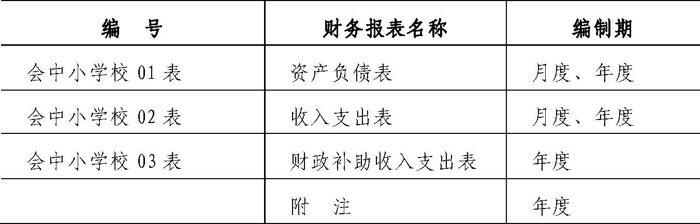
资产负债表
| 编制单位： | ＿＿＿＿年＿＿月＿＿日 | 会中小学校01表
单位：元 |
|
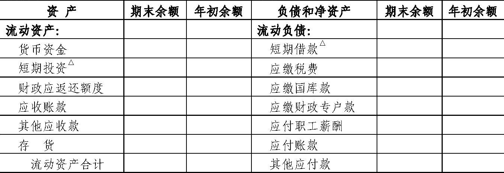
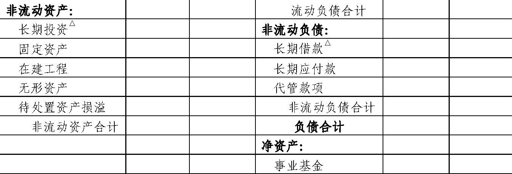
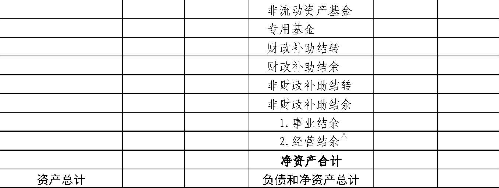
|
说明：
带有“△”上标的报表项目为中小学校非义务教育阶段填列的项目，义务教育阶段不填列。兼有义务教育阶段和非义务教育阶段的中小学校可以填列标有“△”的项目，但仅能适用于本校非义务教育阶段的有关业务。
|
收入支出表（月报）
| 编制单位： | ＿＿＿＿年＿＿月 | 会中小学校02表
单位：元 |
|
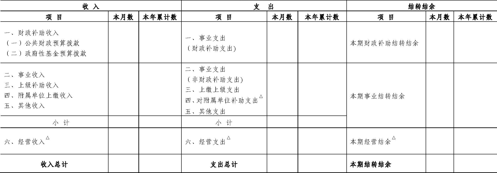
|
说明：
带有“△”上标的报表项目为中小学校非义务教育阶段填列的项目，义务教育阶段不填列。兼有义务教育阶段和非义务教育阶段的中小学校可以填列标有“△”的项目，但仅能适用于本校非义务教育阶段的有关业务。
|
收入支出表（年报）
| 编制单位： | ＿＿＿＿年度 | 会中小学校02表
单位：元 |
|
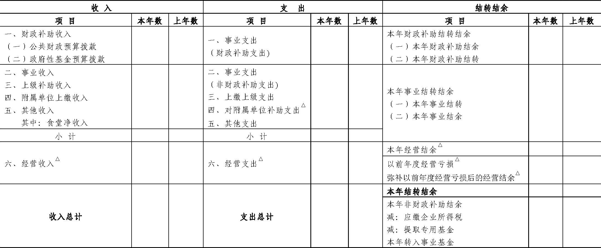
|
说明：
带有“△”上标的报表项目为中小学校非义务教育阶段填列的项目，义务教育阶段不填列。兼有义务教育阶段和非义务教育阶段的中小学校可以填列标有“△”的项目，但仅能适用于本校非义务教育阶段的有关业务。
|
财政补助收入支出表
| 编制单位： | ＿＿＿＿年度 | 会中小学校03表
单位：元 |
|
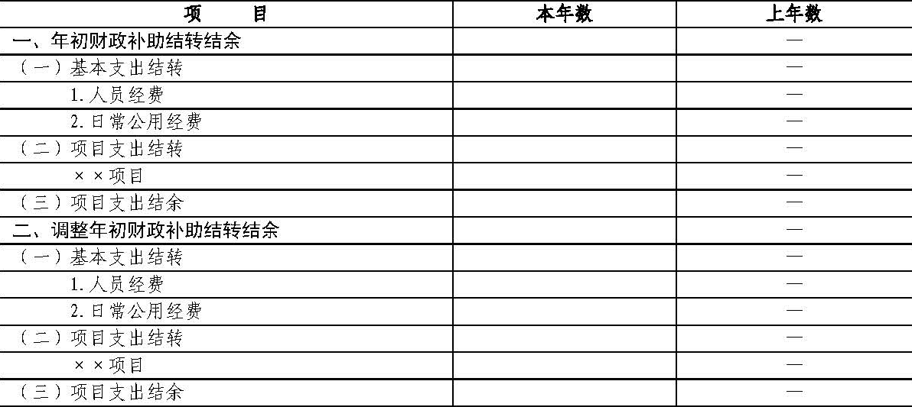
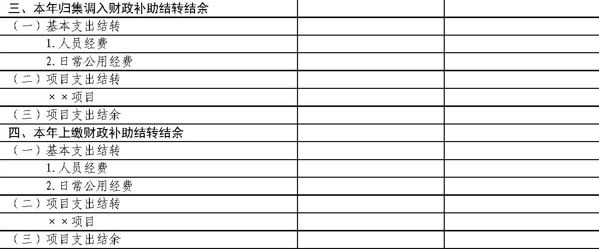
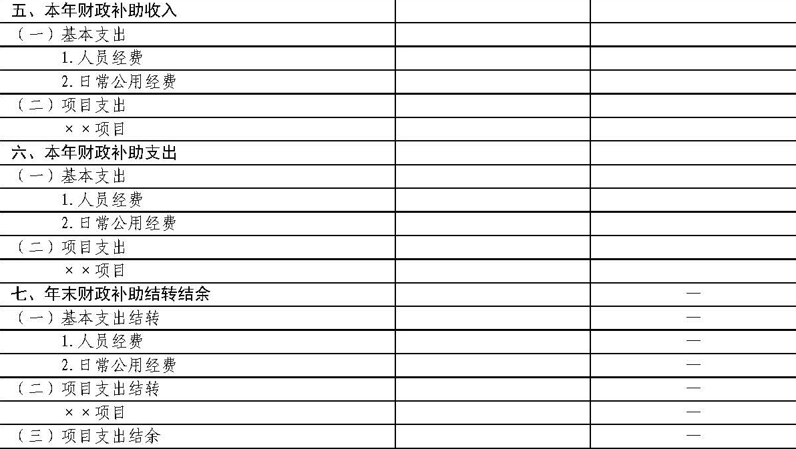
|
说明：
带有“△”上标的报表项目为中小学校非义务教育阶段填列的项目，义务教育阶段不填列。兼有义务教育阶段和非义务教育阶段的中小学校可以填列标有“△”的项目，但仅能适用于本校非义务教育阶段的有关业务。
|
第五部分 财务报表编制说明
一、资产负债表编制说明
（一）本表反映中小学校在某一特定日期全部资产、负债和净资产的情况。
（二）本表“年初余额”栏内各项数字，应当根据上年年末资产负债表“期末余额”栏内数字填列。如果本年度资产负债表规定的各个项目的名称和内容同上年度不相一致，应对上年年末资产负债表各项目的名称和数字按照本年度的规定进行调整，填入本表“年初余额”栏内。
（三）本表“期末余额”栏各项目的内容和填列方法：
1.资产类项目
（1）“货币资金”项目，反映中小学校期末库存现金、银行存款和零余额账户用款额度的合计数。本项目应当根据“库存现金”、“银行存款”、“零余额账户用款额度”科目的期末余额合计填列。
（2）“短期投资△”项目，反映非义务教育阶段中小学校期末持有的短期投资成本。本项目应当根据“短期投资”科目的期末余额填列。
（3）“财政应返还额度”项目，反映中小学校期末财政应返还额度的金额。本项目应当根据“财政应返还额度”科目的期末余额填列。
（4）“应收账款”项目，反映中小学校期末尚未收回的应收账款余额。本项目应当根据“应收账款”科目的期末余额填列。
（5）“其他应收款”项目，反映中小学校期末尚未收回的其他应收款余额。本项目应当根据“其他应收款”科目的期末余额填列。
（6）“存货”项目，反映中小学校期末为开展教育教学及其他活动耗用而储存的各种材料、燃料、包装物、低值易耗品及达不到固定资产标准的用具、装具、动植物等的实际成本。本项目应当根据“存货”科目的期末余额填列。
（7）“长期投资△”项目，反映非义务教育阶段中小学校期末持有的长期投资成本。本项目应当根据“长期投资”科目的期末余额填列。
（8）“固定资产”项目，反映中小学校期末各项固定资产的账面余额。本项目应当根据“固定资产”科目的期末余额填列。
（9）“在建工程”项目，反映中小学校期末尚未完工交付使用的在建工程发生的实际成本。本项目应当根据“在建工程”科目的期末余额填列。
（10）“无形资产”项目，反映中小学校期末持有的各项无形资产的账面余额。本项目应当根据“无形资产”科目的期末余额填列。
（11）“待处置资产损溢”项目，反映中小学校期末待处置资产的价值及处置损溢。本项目应当根据“待处置资产损溢”科目的期末借方余额填列；如“待处置资产损溢”科目期末为贷方余额，则以“-”号填列。2.负债类项目
（12）“短期借款△”项目，反映非义务教育阶段中小学校借入的期限在1年内（含1年）的各种借款本金。本项目应当根据“短期借款”科目的期末余额填列。
（13）“应缴税费”项目，反映中小学校应缴未缴的各种税费。本项目应当根据“应缴税费”科目的期末贷方余额填列；如“应缴税费”科目期末为借方余额，则以“-”号填列。
（14）“应缴国库款”项目，反映中小学校按规定应缴入国库的款项（应缴税费除外）。本项目应当根据“应缴国库款”科目的期末余额填列。
（15）“应缴财政专户款”项目，反映中小学校按规定应缴入财政专户的款项。本项目应当根据“应缴财政专户款”科目的期末余额填列。
（16）“应付职工薪酬”项目，反映中小学校按有关规定应付给职工及为职工支付的各种薪酬。本项目应当根据“应付职工薪酬”科目的期末余额填列。
（17）“应付账款”项目，反映中小学校期末尚未支付的应付账款的金额。本项目应当根据“应付账款”科目的期末余额填列。
（18）“其他应付款”项目，反映中小学校期末应付未付的其他各项应付及暂收款项。本项目应当根据“其他应付款”科目的期末余额填列。
（19）“长期借款△”项目，反映非义务教育阶段中小学校借入的期限超过1年（不含1年）的各项借款本金。本项目应当根据“长期借款”科目的期末余额填列。
（20）“长期应付款”项目，反映中小学校发生的偿还期限超过1年（不含1年）的各种应付款项。本项目应当根据“长期应付款”科目的期末余额填列。
（21）“代管款项”项目，反映中小学校接受其他单位或个人委托代为管理的各类款项。本项目应当根据“代管款项”科目的期末余额填列。3.净资产类项目
（22）“事业基金”项目，反映中小学校期末拥有的非限定用途的净资产。本项目应当根据“事业基金”科目的期末余额填列。
（23）“非流动资产基金”项目，反映中小学校期末非流动资产占用的金额。本项目应当根据“非流动资产基金”科目的期末余额填列。
（24）“专用基金”项目，反映中小学校按规定设置或提取的具有专门用途的净资产。本项目应当根据“专用基金”科目的期末余额填列。
（25）“财政补助结转”项目，反映中小学校滚存的财政补助结转资金。本项目应当根据“财政补助结转”科目的期末余额填列。
（26）“财政补助结余”项目，反映中小学校滚存的财政补助项目支出结余资金。本项目应当根据“财政补助结余”科目的期末余额填列。
（27）“非财政补助结转”项目，反映中小学校滚存的非财政补助专项结转资金。本项目应当根据“非财政补助结转”科目的期末余额填列。
（28）“非财政补助结余”项目，反映中小学校自年初至报告期末累计实现的非财政补助结余弥补以前年度经营亏损后的余额。本项目应当根据“事业结余”、“经营结余”科目的期末余额合计填列；如“事业结余”、“经营结余”科目的期末余额合计为亏损数，则以“-”号填列。在编制年度资产负债表时，本项目金额一般应为“0”；如不为“0”，本项目金额应为“经营结余”科目的期末借方余额（以“-”号填列）。
“事业结余”项目，反映中小学校自年初至报告期末累计实现的事业结余。本项目应当根据“事业结余”科目的期末余额填列；如“事业结余”科目的期末余额为亏损数，则以“-”号填列。在编制年度资产负债表时，本项目金额应为“0”。
“经营结余△”项目，反映非义务教育阶段中小学校自年初至报告期末累计实现的经营结余弥补以前年度经营亏损后的余额。本项目应当根据“经营结余”科目的期末余额填列；如“经营结余”科目的期末余额为亏损数，则以“-”号填列。在编制年度资产负债表时，本项目金额一般应为“0”；如不为“0”，本项目金额应为“经营结余”科目的期末借方余额（以“-”号填列）。
二、收入支出表编制说明
（一）本表反映中小学校在某一会计期间内各项收入、支出和结转结余情况，以及年末非财政补助结余的分配情况。
（二）本表（月报）“本月数”栏反映各项目的本月实际发生数。
本表（月报）“本年累计数”栏反映各项目自年初起至报告期末止的累计实际发生数。
（三）本表（月报）“本月数”栏各项目的内容和填列方法：
1.“财政补助收入”项目，反映中小学校本期从同级财政部门取得的各类财政拨款。本项目应当根据“公共财政预算拨款”和“政府性基金预算拨款”科目本期发生额的合计数填列。
（1）“公共财政预算拨款”项目，反映中小学校从同级财政部门取得的、用公共财政预算安排的各类财政拨款。本项目应当根据“公共财政预算拨款”科目的本期发生额填列。
（2）“政府性基金预算拨款”项目，反映中小学校从同级财政部门取得的、用政府性基金预算安排的各类财政拨款。本项目应当根据“政府性基金预算拨款”科目的本期发生额填列。
2.“事业收入”项目，反映中小学校本期开展教育教学及其辅助活动取得的收入。本项目应当根据“事业收入”科目的本期发生额填列。
3.“上级补助收入”项目，反映中小学校本期从主管部门和上级单位取得的非财政补助收入。本项目应当根据“上级补助收入”科目的本期发生额填列。
4.“附属单位上缴收入”项目，反映中小学校附属独立核算单位本期按照有关规定上缴的收入。本项目应当根据“附属单位上缴收入”科目的本期发生额填列。
5.“其他收入”项目，反映中小学校本期除财政补助收入、事业收入、上级补助收入、附属单位上缴收入、经营收入以外的其他收入。本项目应当根据“其他收入”科目的本期发生额填列。
6.“经营收入△”项目，反映非义务教育阶段中小学校本期在教育教学及其辅助活动之外开展非独立核算经营活动取得的收入。本项目应当根据“经营收入”科目的本期发生额填列。
7.“事业支出（财政补助支出）”项目，反映中小学校本期使用财政补助收入发生的事业支出。本项目应当根据“事业支出”科目下“财政补助支出”明细科目的本期发生额填列。
8.“事业支出（非财政补助支出）”项目，反映中小学校本期使用财政补助收入以外的资金发生的事业支出。本项目应当按照“事业支出”科目下“非财政专项资金支出”、“其他资金支出”明细科目的本期发生额合计填列。
9.“上缴上级支出”项目，反映中小学校本期按照财政部门和主管部门的规定上缴上级单位的支出。本项目应当根据“上缴上级支出”科目的本期发生额填列。
10.“对附属单位补助支出△”项目，反映非义务教育阶段中小学校本期用财政补助收入之外的收入对附属单位补助发生的支出。本项目应当根据“对附属单位补助支出”科目的本期发生额填列。
11.“其他支出”项目，反映中小学校本期除事业支出、上缴上级支出、对附属单位补助支出、经营支出以外的其他支出。本项目应当根据“其他支出”科目的本期发生额填列。
12.“经营支出△”项目，反映非义务教育阶段中小学校本期在教育教学及其辅助活动之外开展非独立核算经营活动发生的支出。本项目应当根据“经营支出”科目的本期发生额填列。
13.“本期财政补助结转结余”项目，反映中小学校本期财政补助收入与财政补助支出相抵后的余额。本项目应当按照本表中“财政补助收入”项目金额减去“事业支出（财政补助支出）”项目金额后的余额填列。
14.“本期事业结转结余”项目，反映中小学校本期除财政补助收支、经营收支以外的各项收支相抵后的余额。本项目应当按照本表中“事业收入”、“上级补助收入”、“附属单位上缴收入”、“其他收入”项目金额小计数减去“事业支出（非财政补助支出）”、“上缴上级支出”、“对附属单位补助支出”、“其他支出”项目金额小计数后的余额填列。
15.“本期经营结余△”项目，反映非义务教育阶段中小学校本期经营收支相抵后的余额。本项目应当按照本表中“经营收入”项目金额减去“经营支出”项目金额后的余额填列；如为负数，以“-”号填列。
（四）本表（年报）“本年数”栏反映各项目的本年实际发生数。
本表（年报）“上年数”栏反映各项目上年度实际发生数。
（五）本表（年报）“本年数”栏各项目的内容和填列方法：
1.收入、支出项目的填列参照本表（月报）“本月数”栏的填列方式。
“其中：食堂净收入”项目，反映中小学校食堂本年收入与支出相抵后的净额。本项目应当根据“其他收入”科目下“食堂净收入”明细科目的本期发生额填列，其金额即中小学校食堂本年收入合计数减去本年支出合计数后的净额；如为负数，以“-”号填列。
2.“本年财政补助结转结余”项目，反映中小学校本年财政补助收入与财政补助支出相抵后的余额。本项目应当按照本表（年报）中“财政补助收入”项目金额减去“事业支出（财政补助支出）”项目金额后的余额填列。
“本年财政补助结余”项目，反映中小学校本年财政补助结余金额。本项目应当按照“财政补助结余”科目本年从“财政补助结转”科目转入的金额填列。
“本年财政补助结转”项目，反映中小学校本年财政补助结转金额。本项目应当按照本表（年报）中“财政补助结转结余”项目金额减去“财政补助结余”项目金额后的余额填列。
3.“本年事业结转结余”项目，反映中小学校本年除财政补助收支、经营收支以外的各项收支相抵后的余额。本项目应当按照本表（年报）中“事业收入（非财政补助支出）”、“上级补助收入”、“附属单位上缴收入”、“其他收入”项目金额小计数减去“事业支出”、“上缴上级支出”、“对附属单位补助支出”、“其他支出”项目金额小计数后的余额填列。
“本年事业结余”项目，反映中小学校本年除财政补助收支、非财政专项资金收支和经营收支以外各项收支相抵后的余额。本项目应当根据“事业结余”科目本年贷方发生额中相关非专项资金收入转入金额减去本年借方发生额中相关非专项资金支出转入金额后的余额填列。
“本年事业结转”项目，反映中小学校本年除财政补助收支以外的各项专项资金收入减去各项专项资金支出后的余额。本项目应当按照本表（年报）中“本年事业结转结余”项目金额减去“本年事业结余”项目金额后的余额填列。
4.“本年经营结余△”项目，反映非义务教育阶段中小学校本年经营收支相抵后的余额。本项目应当按照本表（年报）中“经营收入”项目金额减去“经营支出”项目金额后的余额填列；如为负数，以“-”号填列。
“以前年度经营亏损△”项目，反映非义务教育阶段中小学校以前年度尚未弥补的经营亏损。本项目应当按照“经营结余”科目年初借方余额，以“-”号填列。
“弥补以前年度经营亏损后的经营结余△”项目，反映非义务教育阶段中小学校本年实现的经营结余扣除本年初未弥补经营亏损后的余额。本项目应当根据“经营结余”科目本年末转入“非财政补助结余分配”科目前的余额填列；如本年末余额为借方余额，以“-”号填列。本项目金额也等于本表（年报）中“本年经营结余”、“以前年度经营亏损（-）”项目金额的合计数。
5.“本年结转结余”项目，反映中小学校本年收入总额减去支出总额后的净额。本项目应当按照本表（年报）中“收入总计”项目金额减去“支出总计”项目金额后的金额填列。本项目金额也等于本表（年报）中“本年财政补助结转结余”、“本年事业结转结余”、“本年经营结余”项目金额的合计数。“本年非财政补助结余”项目，反映中小学校本年除财政补助之外的其他结余金额。本表（年报）中“弥补以前年度经营亏损后的经营结余”项目为正数的，本项目应当按照本表（年报）中“本年事业结余”、“弥补以前年度经营亏损后的经营结余”项目金额的合计数填列；如为负数，以“-”号填列。本表（年报）中“弥补以前年度经营亏损后的经营结余”项目为负数的，本项目应当按照本表（年报）中“本年事业结余”项目金额填列；如为负数，以“-”号填列。“应缴企业所得税”项目，反映中小学校按照税法规定应缴纳的企业所得税金额。本项目应当根据“非财政补助结余分配”科目的本年发生额分析填列。
“提取专用基金”项目，反映中小学校本年按规定提取的专用基金金额。本项目应当根据“非财政补助结余分配”科目的本年发生额分析填列。
“本年转入事业基金”项目，反映中小学校本年按规定转入事业基金的非财政补助结余资金。本项目应当按照本表（年报）中“本年非财政补助结余”项目金额减去“应缴企业所得税”、“提取专用基金”项目金额后的余额填列；如为负数，以“-”号填列。
三、财政补助收入支出表编制说明
（一）本表反映中小学校某一会计年度财政补助收入、支出、结转及结余情况。
（二）本表“上年数”栏内各项数字，应当根据上年度财政补助收入支出表中“本年数”栏内数字填列。
（三）本表“本年数”栏各项目的内容和填列方法：
1.“年初财政补助结转结余”项目及其所属各明细项目，反映中小学校本年初财政补助结转和结余余额。各项目应当根据上年度“财政补助收入支出表”中“年末财政补助结转结余”项目及其所属各明细项目“本年数”栏的数字填列。
2.“调整年初财政补助结转结余”项目及其所属各明细项目，反映中小学校因本年发生需要调整以前年度财政补助结转结余的事项，而对年初财政补助结转结余的调整金额。各项目应当根据“财政补助结转”、“财政补助结余”科目及其所属明细科目的本年发生额分析填列。如调整减少年初财政补助结转结余，以“-”号填列。
3.“本年归集调入财政补助结转结余”项目及其所属各明细项目，反映中小学校本年度取得主管部门归集调入的财政补助结转结余资金或额度金额。各项目应当根据“财政补助结转”、“财政补助结余”科目及其所属明细科目的本年发生额分析填列。
4.“本年上缴财政补助结转结余”项目及其所属各明细项目，反映中小学校本年度按规定实际上缴的财政补助结转结余资金或额度金额。各项目应当根据“财政补助结转”、“财政补助结余”科目及其所属明细科目的本年发生额分析填列。
5.“本年财政补助收入”项目及其所属各明细项目，反映中小学校本年度从同级财政部门取得的各类财政拨款金额。各项目应当根据“公共财政预算拨款”、“政府性基金预算拨款”科目及其所属明细科目的本年发生额填列。
6.“本年财政补助支出”项目及其所属各明细项目，反映中小学校本年度发生的财政补助支出金额。各项目应当根据“事业支出”科目下“财政补助支出”明细科目本年发生额填列。
7.“年末财政补助结转结余”项目及其所属各明细项目，反映中小学校截至本年末的财政补助结转和结余余额。各项目应当根据“财政补助结转”、“财政补助结余”科目及其所属明细科目的年末余额填列。
四、附注
中小学校的会计报表附注至少应当披露下列内容：
（一）遵循《事业单位会计准则》、《中小学校会计制度》的声明。
（二）学校整体财务状况、业务活动情况的说明。
（三）会计报表中列示的重要项目的进一步说明，包括其主要构成、增减变动情况等。
学校学生、教职工、离退休人员及固定资产基本情况的披露格式参见中小学校基本数字表。事业支出基本情况的披露格式参见中小学校事业支出明细表。
（四）重要资产处置情况的说明。
（五）（非义务教育阶段中小学校）重大投资、借款及经营活动的说明。
（六）以前年度结转结余调整情况的说明。
（七）本校食堂单独核算的会计报表。
（八）有助于理解和分析会计报表需要说明的其他事项。
中小学校基本数字表
中小学校事业支出明细表
| 编制单位： | ＿＿＿＿年度 | 单位：元 |
|
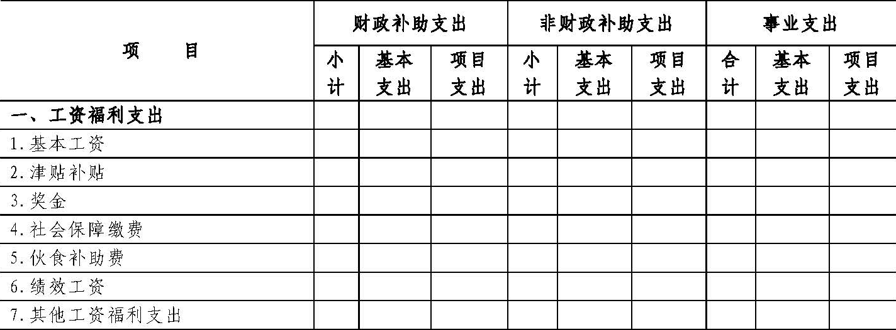
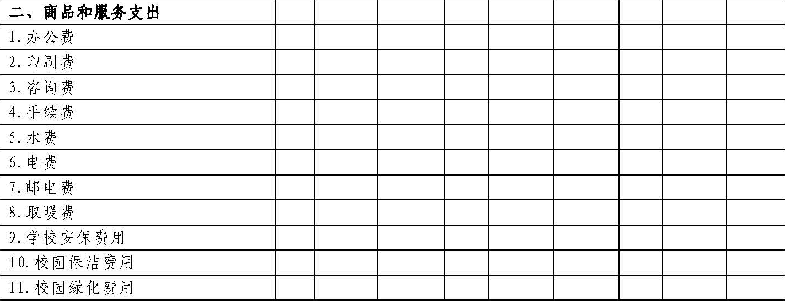
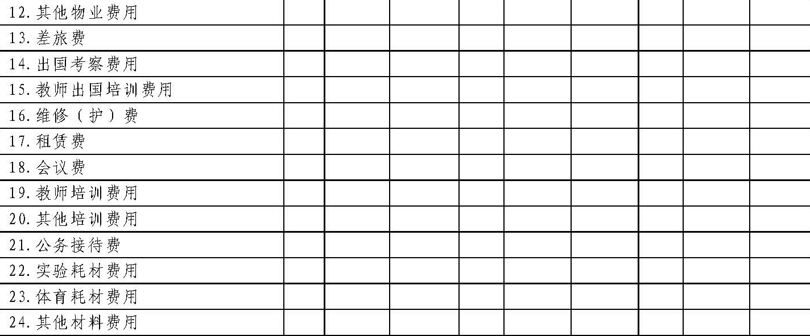
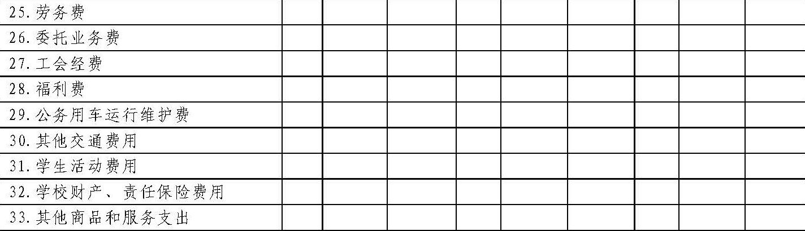
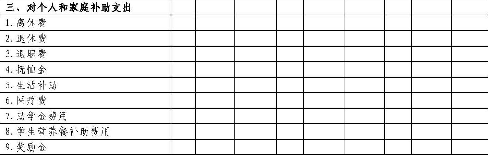
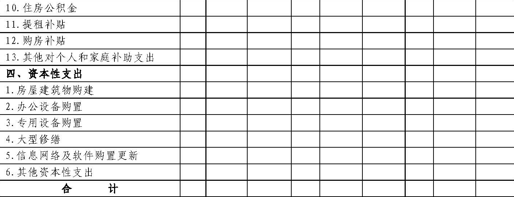
|